At a glance一览一覽概要En brefAuf einen Blick
- Problem问题問題課題ProblèmeProblem
- Keep one story coherent across four disconnected media, and hold a campus audience for 15 minutes.让一个故事在四种互不相连的媒介之间保持连贯，并让校园里的玩家投入 15 分钟。讓一個故事在四種互不相連的媒介之間保持連貫，並讓校園裡的玩家投入 15 分鐘。互いにつながっていない 4 つのメディアをまたいで 1 つの物語を破綻させず、キャンパスのプレイヤーを 15 分間引きつけること。Garder une histoire cohérente sur quatre médias déconnectés, et retenir un public étudiant pendant 15 minutes.Eine Geschichte über vier unverbundene Medien hinweg stimmig halten und ein Campus-Publikum 15 Minuten lang fesseln.
- Role角色角色役割RôleRolle
- Team lead. Built the web hub (state, routing, puzzles, the ARI guide panel) and integrated the WebGAL story. Andrew: AR/VR, physical artifacts and UX. Henry: lore research and documentation.组长。开发网页中枢（状态、路由、谜题、ARI 引导面板）并集成 WebGAL 剧情。Andrew 负责 AR/VR、实体道具与 UX，Henry 负责世界观研究与文档。組長。開發網頁中樞（狀態、路由、謎題、ARI 引導面板）並整合 WebGAL 劇情。Andrew 負責 AR/VR、實體道具與 UX，Henry 負責世界觀研究與文件。チームリーダー。ウェブハブ（状態管理、ルーティング、パズル、ARI のガイドパネル）を開発し、WebGAL のストーリーを組み込みました。Andrew は AR/VR・実物の小道具・UX、Henry は世界観のリサーチとドキュメントを担当。Chef d’équipe. J’ai développé le hub web (état, routage, énigmes, panneau du guide ARI) et intégré l’histoire WebGAL. Andrew : RA/RV, objets physiques et UX. Henry : recherche narrative et documentation.Teamleitung. Ich habe den Web-Hub gebaut (Zustand, Routing, Rätsel, das ARI-Hilfepanel) und die WebGAL-Geschichte integriert. Andrew: AR/VR, physische Objekte und UX. Henry: Lore-Recherche und Dokumentation.
- Tools工具工具ツールOutilsTools
- Plain HTML/CSS/JS with localStorage, WebGAL, A-Frame / WebXR, Zappar Mattercraft, Leaflet原生 HTML/CSS/JS 与 localStorage、WebGAL、A-Frame / WebXR、Zappar Mattercraft、Leaflet原生 HTML/CSS/JS 與 localStorage、WebGAL、A-Frame / WebXR、Zappar Mattercraft、Leaflet素の HTML/CSS/JS と localStorage、WebGAL、A-Frame / WebXR、Zappar Mattercraft、LeafletHTML/CSS/JS natif avec localStorage, WebGAL, A-Frame / WebXR, Zappar Mattercraft, LeafletReines HTML/CSS/JS mit localStorage, WebGAL, A-Frame / WebXR, Zappar Mattercraft, Leaflet
- Timeline时间线時間線タイムラインCalendrierZeitplan
- 14 weeks · P1 Narrative → P2 Mapping → P3 Cognitive walkthrough14 周 · P1 叙事 → P2 路线图 → P3 认知走查14 週 · P1 敘事 → P2 路線圖 → P3 認知走查14 週間 · P1 ナラティブ → P2 マッピング → P3 認知的ウォークスルー14 semaines · P1 Narration → P2 Cartographie → P3 Parcours cognitif14 Wochen · P1 Erzählung → P2 Mapping → P3 Cognitive Walkthrough
- Key Decisions关键决策關鍵決策主な判断Décisions clésWichtige Entscheidungen
- Two pure structures instead of one hybrid; one config file drives every route; AR/VR are shortcuts, never gates用两种纯粹的结构代替一种混合结构；一个配置文件驱动所有路线；AR/VR 是捷径，而不是关卡用兩種純粹的結構代替一種混合結構；一個配置檔案驅動所有路線；AR/VR 是捷徑，而不是關卡ひとつの混合構造ではなく純粋な構造を 2 つ；1 つの設定ファイルがすべてのルートを動かす；AR/VR は近道であって関門ではないDeux structures pures plutôt qu’un hybride ; un seul fichier de configuration pilote chaque parcours ; la RA et la RV sont des raccourcis, jamais des barrièresZwei reine Strukturen statt eines Hybrids; eine Konfigurationsdatei steuert jede Route; AR/VR sind Abkürzungen, nie Sperren
- Outcome成果成果成果RésultatErgebnis
- Tester feedback moved from “I don’t know what to do” to “I want to play again on Hard Mode.”测试反馈从“我不知道该做什么”变成了“我想用困难模式再玩一遍”。測試回饋從“我不知道該做什麼”變成了“我想用困難模式再玩一遍”。テスターの声は「何をすればいいかわからない」から「ハードモードでもう一度遊びたい」に変わりました。Les retours sont passés de « je ne sais pas quoi faire » à « je veux rejouer en mode Difficile ».Das Feedback der Testpersonen wandelte sich von „Ich weiß nicht, was ich tun soll“ zu „Ich will es noch mal im schweren Modus spielen“.
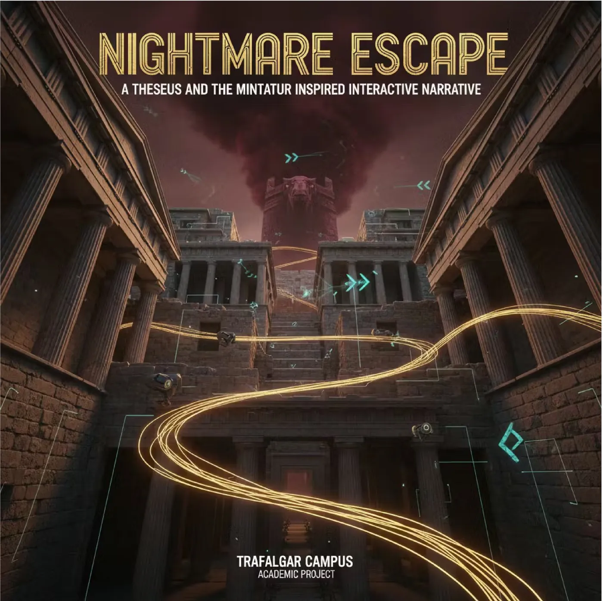
Context背景背景背景ContexteKontext
The Trafalgar Labyrinth turns Sheridan’s campus network into a digital maze. Players see an on-campus poster about a Greek game, scan its QR code and enter the web hub as Theos, recruited by ARI to secure compromised parts of the network before the Minotaur system spreads. Every platform is a space inside the labyrinth, designed to disorient: players are pulled across media and made to feel lost, while the architecture underneath always moves them toward the exit. The maze is the disguise; the progression is the design.
Trafalgar Labyrinth 把谢尔丹的校园网络变成一座数字迷宫。玩家在校园里看到一张关于希腊游戏的海报，扫描二维码进入网页中枢，化身 Theos，受 ARI 之托，在“米诺陶”系统扩散之前守住网络中被攻陷的区域。每个平台都是迷宫里的一个空间，专为让人迷失而设计：玩家被拉着穿过不同媒介，真切地感到迷路，而底层的结构始终把他们推向出口。迷宫是伪装，推进才是设计。
Trafalgar Labyrinth 把謝爾丹的校園網路變成一座數位迷宮。玩家在校園裡看到一張關於希臘遊戲的海報，掃描二維碼進入網頁中樞，化身 Theos，受 ARI 之託，在“米諾陶”系統擴散之前守住網路中被攻陷的區域。每個平台都是迷宮裡的一個空間，專為讓人迷失而設計：玩家被拉著穿過不同媒介，真切地感到迷路，而底層的結構始終把他們推向出口。迷宮是偽裝，推進才是設計。
Trafalgar Labyrinth は、シェリダンのキャンパスネットワークをデジタルの迷宮に変えます。キャンパスでギリシャ神話のゲームのポスターを見つけたプレイヤーは、QR コードを読み取ってウェブハブに入り、Theos として ARI に招かれ、ミノタウロス・システムが広がる前にネットワークの侵された領域を守ります。どのプラットフォームも迷宮の中の空間で、迷わせるために設計されています。プレイヤーはメディアを行き来させられて本当に迷子になった気分になりますが、その下の構造は常に出口へと導きます。迷宮は偽装で、進行こそがデザインです。
Le Trafalgar Labyrinth transforme le réseau du campus de Sheridan en labyrinthe numérique. Les joueurs repèrent sur le campus une affiche pour un jeu grec, scannent son QR code et entrent dans le hub web sous les traits de Theos, recruté par ARI pour sécuriser les zones compromises du réseau avant que le système Minotaure ne s’étende. Chaque plateforme est un espace du labyrinthe, conçu pour désorienter : les joueurs passent d’un support à l’autre et se sentent réellement perdus, tandis que l’architecture sous-jacente les mène toujours vers la sortie. Le labyrinthe est le déguisement ; la progression est le design.
Das Trafalgar Labyrinth verwandelt das Campus-Netzwerk des Sheridan College in ein digitales Labyrinth. Die Spielenden entdecken auf dem Campus ein Plakat zu einem griechischen Spiel, scannen den QR-Code und betreten den Web-Hub als Theos, angeworben von ARI, um befallene Teile des Netzwerks zu sichern, bevor sich das Minotaurus-System ausbreitet. Jede Plattform ist ein Raum im Labyrinth und soll desorientieren: Die Spielenden werden durch verschiedene Medien gezogen und sollen sich verloren fühlen, während die Architektur darunter sie stets zum Ausgang führt. Das Labyrinth ist die Tarnung; der Fortschritt ist das Design.
- Course — VDES 34444 Interactive Narrative, Bachelor of Interaction Design, Sheridan College · Winter 2026 (14 weeks)
- Team — Yiyang, Andrew, Henry, with AI as a defined collaborator · client: Steve H
- Platforms — web hub · WebGAL visual novel · poster AR · WebXR room · physical artifacts
- Tools — HTML/CSS/JS · Zappar Mattercraft · A-Frame · WebGAL · Claude · So-VITS-SVC
- Constraints — little or no budget · Sheridan print services (black-and-white and colour) · phone-first · a 15-minute session cap · AI used sparingly · Zappar AI credits left unused
- 课程 — VDES 34444 互动叙事，谢尔丹学院交互设计学士 · 2026 年冬季（14 周）
- 团队 — Yiyang、Andrew、Henry，AI 作为分工明确的协作者 · 客户：Steve H
- 平台 — 网页中枢 · WebGAL 视觉小说 · 海报 AR · WebXR 房间 · 实体道具
- 工具 — HTML/CSS/JS · Zappar Mattercraft · A-Frame · WebGAL · Claude · So-VITS-SVC
- 限制 — 几乎零预算 · 谢尔丹打印服务（黑白与彩色）· 手机优先 · 单局 15 分钟上限 · 尽量少用 AI · Zappar 的 AI 额度未使用
- 課程 — VDES 34444 互動敘事，謝爾丹學院互動設計學士 · 2026 年冬季（14 週）
- 團隊 — Yiyang、Andrew、Henry，AI 作為分工明確的協作者 · 客戶：Steve H
- 平台 — 網頁中樞 · WebGAL 視覺小說 · 海報 AR · WebXR 房間 · 實體道具
- 工具 — HTML/CSS/JS · Zappar Mattercraft · A-Frame · WebGAL · Claude · So-VITS-SVC
- 限制 — 幾乎零預算 · 謝爾丹列印服務（黑白與彩色）· 手機優先 · 單局 15 分鐘上限 · 儘量少用 AI · Zappar 的 AI 額度未使用
- 授業 — VDES 34444 インタラクティブ・ナラティブ、シェリダン・カレッジ インタラクションデザイン学士 · 2026 年冬（14 週）
- チーム — Yiyang、Andrew、Henry、役割を決めた協力者としての AI · クライアント：Steve H
- プラットフォーム — ウェブハブ · WebGAL ビジュアルノベル · ポスター AR · WebXR ルーム · 実物の小道具
- ツール — HTML/CSS/JS · Zappar Mattercraft · A-Frame · WebGAL · Claude · So-VITS-SVC
- 制約 — 予算はほぼゼロ · シェリダンの印刷サービス（モノクロとカラー）· スマホ前提 · 1 回 15 分まで · AI は控えめに · Zappar の AI クレジットは未使用
- Cours — VDES 34444 Narration interactive, baccalauréat en design d’interaction, Sheridan College · hiver 2026 (14 semaines)
- Équipe — Yiyang, Andrew, Henry, et l’IA comme collaboratrice au rôle défini · client : Steve H
- Plateformes — hub web · visual novel WebGAL · affiche en RA · salle WebXR · objets physiques
- Outils — HTML/CSS/JS · Zappar Mattercraft · A-Frame · WebGAL · Claude · So-VITS-SVC
- Contraintes — budget quasi nul · services d’impression de Sheridan (noir et blanc, couleur) · mobile d’abord · séance plafonnée à 15 minutes · IA utilisée avec parcimonie · crédits IA de Zappar laissés de côté
- Kurs — VDES 34444 Interactive Narrative, Bachelor of Interaction Design, Sheridan College · Winter 2026 (14 Wochen)
- Team — Yiyang, Andrew, Henry und KI als Mitarbeiterin mit klar definierter Rolle · Auftraggeber: Steve H
- Plattformen — Web-Hub · WebGAL-Visual-Novel · Plakat-AR · WebXR-Raum · physische Objekte
- Tools — HTML/CSS/JS · Zappar Mattercraft · A-Frame · WebGAL · Claude · So-VITS-SVC
- Rahmenbedingungen — kaum oder kein Budget · Druckservice des Sheridan College (schwarz-weiß und farbig) · Smartphone zuerst · höchstens 15 Minuten pro Spielrunde · KI nur sparsam · Zappars KI-Guthaben ungenutzt
What we built我们做了什么我們做了什麼つくったものCe que nous avons construitWas wir gebaut haben
A hub-and-spoke experience across six platforms: a web game hub with puzzle locks, a WebGAL visual novel, an AR poster overlay, a VR escape room, physical campus artifacts and three distinct endings. Players collect the fragments of the password THREAD to defeat the Minotaur system and leave the labyrinth.
一个横跨六个平台的中心辐射式体验：带谜题锁的网页游戏中枢、WebGAL 视觉小说、AR 海报叠层、VR 密室、校园里的实体道具，以及三个不同结局。玩家收集密码 THREAD 的碎片，击败米诺陶系统，离开迷宫。
一個橫跨六個平台的中心輻射式體驗：帶謎題鎖的網頁遊戲中樞、WebGAL 視覺小說、AR 海報疊層、VR 密室、校園裡的實體道具，以及三個不同結局。玩家收集密碼 THREAD 的碎片，擊敗米諾陶系統，離開迷宮。
6 つのプラットフォームにまたがるハブ＆スポーク型の体験です。パズルロック付きのウェブゲームハブ、WebGAL のビジュアルノベル、ポスターの AR オーバーレイ、VR の脱出ルーム、キャンパスに置いた実物の小道具、そして 3 つのエンディング。プレイヤーはパスワード THREAD の欠片を集め、ミノタウロス・システムを倒して迷宮を出ます。
Une expérience en étoile sur six plateformes : un hub de jeu web à énigmes verrouillées, un visual novel WebGAL, une surcouche RA sur affiche, une salle d’évasion en RV, des objets physiques sur le campus et trois fins distinctes. Les joueurs réunissent les fragments du mot de passe THREAD pour vaincre le système Minotaure et quitter le labyrinthe.
Ein sternförmig aufgebautes Erlebnis über sechs Plattformen: ein Web-Spiel-Hub mit Rätselschlössern, eine WebGAL-Visual-Novel, ein AR-Overlay auf einem Plakat, ein VR-Escape-Room, physische Objekte auf dem Campus und drei unterschiedliche Enden. Die Spielenden sammeln die Fragmente des Passworts THREAD, um das Minotaurus-System zu besiegen und das Labyrinth zu verlassen.
Why this approach为什么这样做為什麼這樣做なぜこのアプローチかPourquoi cette approcheWarum dieser Ansatz
The Theseus myth gave us a clear antagonist, guide and goal — and it justified every platform as a different corridor of the maze. A maze is meant to confuse, so each platform brings new rules and a new medium, while the system beneath keeps moving the player toward the exit: Sheridan’s own network, hacked.
忒修斯神话给了我们清晰的反派、向导和目标，也让每个平台都顺理成章地成为迷宫里的一条不同走廊。迷宫本来就是用来让人迷惑的，所以每个平台都带来新的规则和新的媒介，而底层系统始终把玩家推向出口 —— 谢尔丹自己的网络，被黑了。
忒修斯神話給了我們清晰的反派、嚮導和目標，也讓每個平台都順理成章地成為迷宮裡的一條不同走廊。迷宮本來就是用來讓人迷惑的，所以每個平台都帶來新的規則和新的媒介，而底層系統始終把玩家推向出口 —— 謝爾丹自己的網路，被黑了。
テセウスの神話は、明確な敵、案内役、目的を与えてくれました。そして、どのプラットフォームも迷宮の別の通路として成り立たせてくれました。迷宮はもともと惑わせるためのもの。だから各プラットフォームは新しいルールと新しいメディアを持ち込み、その下のシステムはプレイヤーを出口へと運び続けます。ハッキングされた、シェリダン自身のネットワークです。
Le mythe de Thésée nous donnait un antagoniste, un guide et un but clairs — et justifiait chaque plateforme comme un couloir différent du labyrinthe. Un labyrinthe est fait pour égarer : chaque plateforme apporte donc de nouvelles règles et un nouveau support, tandis que le système en dessous pousse toujours le joueur vers la sortie. Le propre réseau de Sheridan, piraté.
Der Theseus-Mythos lieferte uns einen klaren Gegenspieler, eine Führerin und ein Ziel – und begründete jede Plattform als einen anderen Gang des Labyrinths. Ein Labyrinth soll verwirren, also bringt jede Plattform neue Regeln und ein neues Medium, während das System darunter die Spielenden weiter zum Ausgang führt: Sheridans eigenes Netzwerk, gehackt.
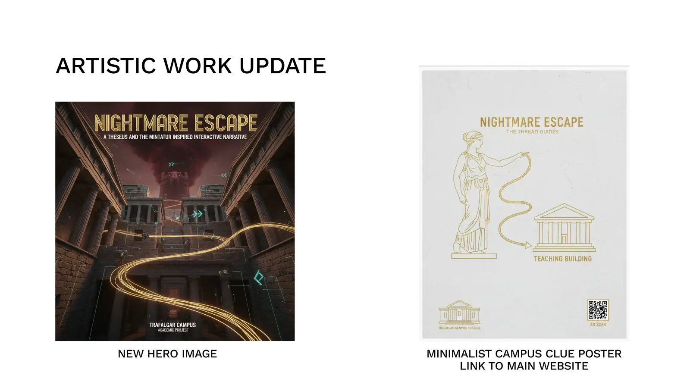
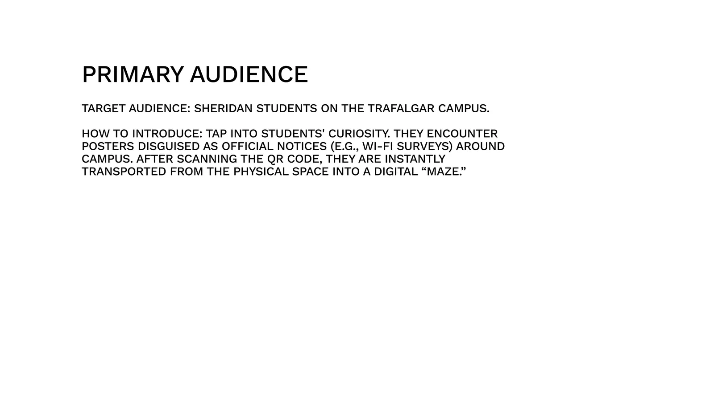
The problem问题問題課題Le problèmeDas Problem
Students walk past posters every day, and interactive fiction usually stays inside one browser tab. Spreading a story over web, AR, VR and physical objects risks fragmentation, and AR/VR reliability varies from phone to phone. We needed one mechanic to tie every touchpoint together — collecting the letters of THREAD — and an architecture where no single medium could strand a player.
学生每天从海报前走过，而互动小说通常只停留在一个浏览器标签页里。把一个故事分散到网页、AR、VR 和实体物件上，很容易支离破碎；而 AR/VR 在不同手机上的稳定性也参差不齐。我们需要一个把所有触点串起来的机制——收集 THREAD 的字母——以及一套不会让玩家卡死在任何一种媒介上的架构。
學生每天從海報前走過，而互動小說通常只停留在一個瀏覽器標籤頁裡。把一個故事分散到網頁、AR、VR 和實體物件上，很容易支離破碎；而 AR/VR 在不同手機上的穩定性也參差不齊。我們需要一個把所有觸點串起來的機制——收集 THREAD 的字母——以及一套不會讓玩家卡死在任何一種媒介上的架構。
学生は毎日ポスターの前を素通りし、インタラクティブ・フィクションはたいてい 1 つのブラウザタブの中で完結します。物語をウェブ・AR・VR・実物に分散させるとバラバラになりやすく、AR/VR の安定性もスマートフォンによってまちまちです。すべての接点を 1 本につなぐ仕組み——THREAD の文字を集めること——と、どのメディアでもプレイヤーが行き詰まらない構造が必要でした。
Les étudiants passent tous les jours devant des affiches, et la fiction interactive reste en général dans un seul onglet. Répartir une histoire entre web, RA, RV et objets physiques risque de la fragmenter, et la fiabilité de la RA/RV varie d’un téléphone à l’autre. Il nous fallait une mécanique qui relie chaque point de contact — réunir les lettres de THREAD — et une architecture où aucun média ne peut bloquer un joueur.
Studierende laufen jeden Tag an Plakaten vorbei, und interaktive Fiktion bleibt meist in einem einzigen Browser-Tab. Verteilt man eine Geschichte auf Web, AR, VR und physische Objekte, droht sie zu zerfallen, und die Zuverlässigkeit von AR/VR schwankt von Handy zu Handy. Wir brauchten eine einzige Mechanik, die jeden Berührungspunkt verbindet – das Sammeln der Buchstaben von THREAD – und eine Architektur, in der kein einzelnes Medium die Spielenden stranden lassen kann.
Four tensions shaped every later decision:
四组张力决定了之后的每一个决策：
四組張力決定了之後的每一個決策：
その後のあらゆる判断は、4 つの緊張関係から生まれました。
Quatre tensions ont orienté toutes les décisions suivantes :
Vier Spannungsfelder prägten jede spätere Entscheidung:
- Attention — the Greek entry poster was kept minimal and icon-led against the loud posters around it, leading the eye from title to figure to coliseum to QR code. The network-error poster beneath it reads as real campus signage. Someone scanning a poster becomes a visible moment of play that makes others curious.
- Coherence — one mechanic, collecting the letters of THREAD, ties every touchpoint together.
- Accessibility — Trafalgar students already know the campus. AR/VR reliability varies by device, so the architecture degrades gracefully. Physical spots were chosen where IoT devices are common (ARI is “everywhere”), where spaces feel utilitarian or eerie, and where traffic is high: J-wing, the library, the artist alleyway and the AA building.
- Scope — deliberately large: a linear string-of-pearls story with a hub-and-spoke layer on top, and hand-offs between web, physical, AR and VR that had to feel seamless inside the fiction.
- 注意力 —— 在周围五颜六色的海报中，希腊风格的入口海报刻意保持极简、以图标为主，引导视线从标题到人物，再到斗兽场，最后落在二维码上。下方的“网络故障”海报看起来就像真的校园告示。有人对着海报扫码，本身就成了一个可见的“游戏时刻”，引起旁人好奇。
- 连贯性 —— 只用一个机制，即收集 THREAD 的字母，把所有触点串在一起。
- 可及性 —— Trafalgar 的学生本来就熟悉校园。AR/VR 在不同设备上的稳定性不一，所以架构要能优雅降级。实体地点选在物联网设备多的地方（ARI “无处不在”）、带点功能性或阴森感的空间，以及人流量大的位置：J 栋、图书馆、艺术巷和 AA 楼。
- 规模 —— 刻意做得很大：在线性的“串珠式”故事上叠一层中心辐射结构，网页、实体、AR 和 VR 之间的每次交接都必须在故事里显得天衣无缝。
- 注意力 —— 在周圍五顏六色的海報中，希臘風格的入口海報刻意保持極簡、以圖示為主，引導視線從標題到人物，再到鬥獸場，最後落在二維碼上。下方的“網路故障”海報看起來就像真的校園告示。有人對著海報掃碼，本身就成了一個可見的“遊戲時刻”，引起旁人好奇。
- 連貫性 —— 只用一個機制，即收集 THREAD 的字母，把所有觸點串在一起。
- 可及性 —— Trafalgar 的學生本來就熟悉校園。AR/VR 在不同裝置上的穩定性不一，所以架構要能優雅降級。實體地點選在物聯網裝置多的地方（ARI “無處不在”）、帶點功能性或陰森感的空間，以及人流量大的位置：J 棟、圖書館、藝術巷和 AA 樓。
- 規模 —— 刻意做得很大：線上性的“串珠式”故事上疊一層中心輻射結構，網頁、實體、AR 和 VR 之間的每次交接都必須在故事裡顯得天衣無縫。
- 注意 —— ギリシャ風の入口ポスターは、周りのにぎやかなポスターに対してあえてミニマルにし、アイコン中心で、タイトル → 人物 → 闘技場 → QR コードへと視線を導きます。その下のネットワークエラーのポスターは、本物のキャンパスの掲示に見えます。ポスターをスキャンする人の姿そのものが目に見える「遊びの瞬間」になり、周りの好奇心を誘います。
- 一貫性 —— THREAD の文字を集めるという 1 つの仕組みが、すべての接点をつなぎます。
- アクセシビリティ —— Trafalgar の学生はすでにキャンパスを知っています。AR/VR の安定性は端末によって違うため、構造は段階的に機能を落としても破綻しないようにしました。実物の設置場所は、IoT 機器が多く（ARI は「どこにでもいる」）、設備的または不気味な雰囲気があり、人通りの多い場所を選びました。J 棟、図書館、アーティスト・アレー、AA 棟です。
- 規模 —— あえて大きく。直線的なストリング・オブ・パールズの物語の上にハブ＆スポークの層を重ね、ウェブ・実物・AR・VR の受け渡しを、物語の中で継ぎ目なく感じさせる必要がありました。
- Attention — face aux affiches criardes qui l’entourent, l’affiche d’entrée grecque reste minimale et iconique, guidant le regard du titre à la figure, au colisée puis au QR code. L’affiche « erreur réseau » placée dessous se lit comme une vraie signalétique du campus. Quelqu’un qui scanne une affiche devient un moment de jeu visible qui pique la curiosité des autres.
- Cohérence — une seule mécanique, réunir les lettres de THREAD, relie tous les points de contact.
- Accessibilité — les étudiants de Trafalgar connaissent déjà le campus. La fiabilité de la RA/RV varie selon l’appareil : l’architecture se dégrade donc en douceur. Les lieux physiques ont été choisis là où les objets connectés abondent (ARI est « partout »), où l’espace paraît technique ou inquiétant, et où le passage est fort : l’aile J, la bibliothèque, l’allée des artistes et le bâtiment AA.
- Ampleur — volontairement grande : une histoire linéaire en collier de perles surmontée d’une couche en étoile, avec des passages entre web, physique, RA et RV qui devaient paraître fluides dans la fiction.
- Aufmerksamkeit — das griechische Einstiegsplakat blieb gegenüber den lauten Plakaten ringsum bewusst minimal und bildzeichenbetont und führt den Blick vom Titel über die Figur und das Kolosseum zum QR-Code. Das Plakat mit der Netzwerkstörung darunter liest sich wie echte Campus-Beschilderung. Wer ein Plakat scannt, wird zu einem sichtbaren Moment des Spiels, der andere neugierig macht.
- Kohärenz — eine einzige Mechanik, das Sammeln der Buchstaben von THREAD, verbindet alle Berührungspunkte.
- Zugänglichkeit — Studierende in Trafalgar kennen den Campus bereits. Die Zuverlässigkeit von AR/VR hängt vom Gerät ab, also degradiert die Architektur sanft. Die physischen Orte wurden dort gewählt, wo viele IoT-Geräte stehen (ARI ist „überall“), wo Räume nüchtern oder unheimlich wirken und wo viel los ist: der J-Flügel, die Bibliothek, die Artist Alleyway und das AA-Gebäude.
- Umfang — bewusst groß: eine lineare Perlenketten-Geschichte mit einer sternförmigen Ebene darüber, und Übergänge zwischen Web, physischem Raum, AR und VR, die sich innerhalb der Fiktion nahtlos anfühlen mussten.
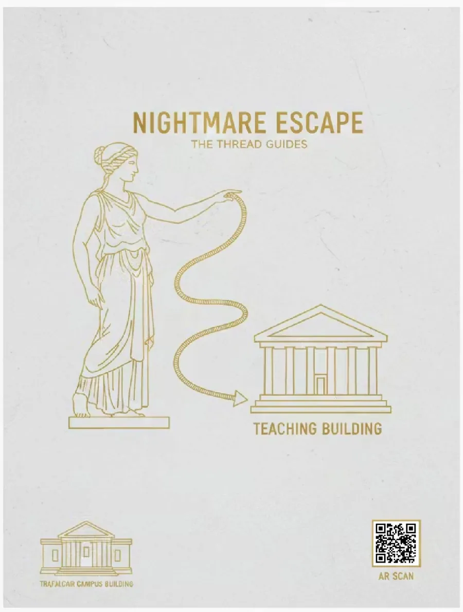
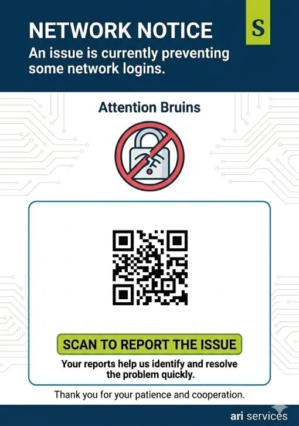
How it plays玩法玩法遊び方Comment on joueSo wird gespielt
- Normal Mode (string of pearls) — Entry → Puzzle 1 → 2 → 3 → Exit. AR and VR branch off after Puzzle 1 as optional shortcuts.
- Hard Mode (hub and spoke) — all six fragment nodes open at once, and the exit needs every one: three web puzzles, AR, VR and the physical envelope.
- Guessing THREAD at the exit works at any time in Normal Mode; Hard Mode closes that shortcut.
- Three endings — Won, Observed and Thread Weaver — depend on the player’s choices and how efficiently they moved through the maze. Finishing a run unlocks New Game+.
- 普通模式（串珠式）——入口 → 谜题 1 → 2 → 3 → 出口。AR 与 VR 在谜题 1 之后作为可选捷径分出。
- 困难模式（中心辐射式）——六个碎片节点同时开放，出口需要全部集齐：三个网页谜题、AR、VR 和实体信封。
- 普通模式下，随时在出口猜出 THREAD 都能过关；困难模式关闭了这条捷径。
- 三个结局——Won、Observed、Thread Weaver——取决于玩家的选择和穿越迷宫的效率。通关后解锁二周目（New Game+）。
- 普通模式（串珠式）——入口 → 謎題 1 → 2 → 3 → 出口。AR 與 VR 在謎題 1 之後作為可選捷徑分出。
- 困難模式（中心輻射式）——六個碎片節點同時開放，出口需要全部集齊：三個網頁謎題、AR、VR 和實體信封。
- 普通模式下，隨時在出口猜出 THREAD 都能過關；困難模式關閉了這條捷徑。
- 三個結局——Won、Observed、Thread Weaver——取決於玩家的選擇和穿越迷宮的效率。通關後解鎖二週目（New Game+）。
- ノーマルモード（ストリング・オブ・パールズ）——入口 → パズル 1 → 2 → 3 → 出口。AR と VR はパズル 1 の後に任意の近道として分岐します。
- ハードモード（ハブ＆スポーク）——6 つの欠片ノードが最初からすべて開き、出口にはその全部が必要：ウェブパズル 3 つ、AR、VR、そして実物の封筒。
- ノーマルモードでは、出口でいつでも THREAD を当てればクリアできます。ハードモードではこの近道は使えません。
- 3 つのエンディング——Won、Observed、Thread Weaver——は、プレイヤーの選択と迷宮を進む効率で決まります。クリアすると New Game+ が解放されます。
- Mode Normal (collier de perles) — Entrée → Énigme 1 → 2 → 3 → Sortie. La RA et la RV s’ouvrent après l’énigme 1 comme raccourcis facultatifs.
- Mode Difficile (en étoile) — les six nœuds de fragments s’ouvrent d’emblée, et la sortie les exige tous : trois énigmes web, la RA, la RV et l’enveloppe physique.
- En mode Normal, deviner THREAD à la sortie fonctionne à tout moment ; le mode Difficile ferme ce raccourci.
- Trois fins — Won, Observed et Thread Weaver — dépendent des choix du joueur et de l’efficacité de son parcours. Terminer une partie débloque un New Game+.
- Normaler Modus (Perlenkette) — Einstieg → Rätsel 1 → 2 → 3 → Ausgang. AR und VR zweigen nach Rätsel 1 als optionale Abkürzungen ab.
- Schwerer Modus (sternförmig) — alle sechs Fragment-Knoten öffnen sich sofort, und der Ausgang verlangt jeden davon: drei Web-Rätsel, AR, VR und den physischen Umschlag.
- Im normalen Modus lässt sich THREAD am Ausgang jederzeit erraten; der schwere Modus schließt diese Abkürzung.
- Drei Enden — Won, Observed und Thread Weaver — hängen von den Entscheidungen der Spielenden ab und davon, wie effizient sie sich durch das Labyrinth bewegt haben. Wer einen Durchgang beendet, schaltet New Game+ frei.
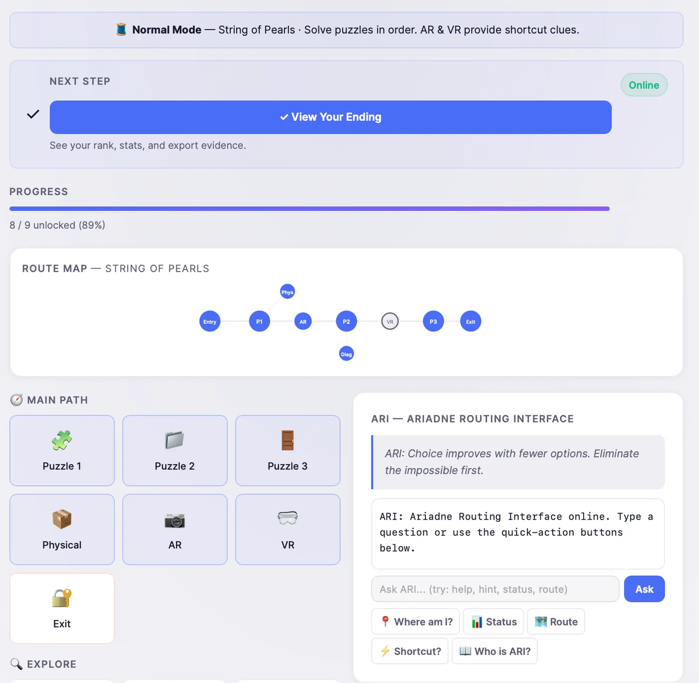
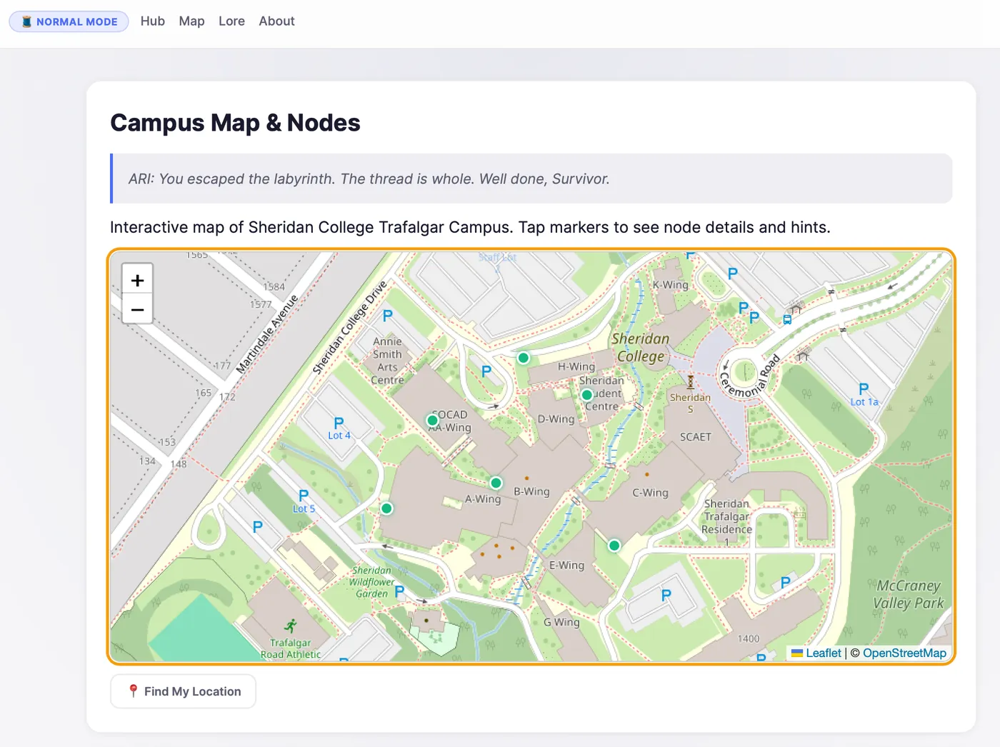
We chose the Theseus myth because it gives a clear antagonist (the Minotaur), guide (Ariadne, here ARI) and goal (escape), and it justifies every platform as another corridor of the maze. The Minotaur is a system, not a character: glitches, misdirected links and hostile messages. The player stays nameless so any student can step in.
我们选择了忒修斯神话：它自带清晰的反派（米诺陶）、向导（阿里阿德涅，在这里是 ARI）和目标（逃出去），也让每个平台都顺理成章地成为迷宫里的又一条走廊。米诺陶不是一个角色，而是一个系统：故障、错误跳转的链接和充满敌意的提示。玩家没有名字，任何学生都能代入。
我們選擇了忒修斯神話：它自帶清晰的反派（米諾陶）、嚮導（阿里阿德涅，在這裡是 ARI）和目標（逃出去），也讓每個平台都順理成章地成為迷宮裡的又一條走廊。米諾陶不是一個角色，而是一個系統：故障、錯誤跳轉的連結和充滿敵意的提示。玩家沒有名字，任何學生都能代入。
テセウス神話を選んだのは、明確な敵（ミノタウロス）、案内役（アリアドネ、ここでは ARI）、目的（脱出）がそろっていて、どのプラットフォームも迷宮の新しい通路として自然に位置づけられるからです。ミノタウロスはキャラクターではなくシステム——グリッチ、誤ったリンク、敵意のあるメッセージ。プレイヤーは名前を持たず、どの学生でも自分を重ねられます。
Nous avons choisi le mythe de Thésée parce qu’il offre un antagoniste clair (le Minotaure), un guide (Ariane, ici ARI) et un but (s’échapper), et qu’il justifie chaque plateforme comme un couloir de plus du labyrinthe. Le Minotaure est un système, pas un personnage : bugs, liens détournés et messages hostiles. Le joueur reste anonyme pour que n’importe quel étudiant puisse s’y projeter.
Wir haben den Theseus-Mythos gewählt, weil er einen klaren Gegenspieler (den Minotaurus), eine Führerin (Ariadne, hier ARI) und ein Ziel (die Flucht) bietet – und jede Plattform als weiteren Gang des Labyrinths begründet. Der Minotaurus ist ein System, keine Figur: Glitches, fehlgeleitete Links und feindselige Meldungen. Die Spielfigur bleibt namenlos, damit jede und jeder Studierende hineinschlüpfen kann.
Key decisions关键决策關鍵決策主な判断Décisions clésWichtige Entscheidungen
- Dual-mode system — Normal Mode (string of pearls: linear, AR/VR optional) and Hard Mode (hub and spoke: all six nodes open from the start, all mandatory). One structure couldn’t serve both casual and invested players.
- Modular platforms — AR and VR open from QR codes or links on the hub rather than as standalone builds, so a player stuck on one node can always go back and take another route.
- Corporate vs. corrupted — the visual identity sets Sheridan’s clean institutional look against the Minotaur’s interference: glitches, distorted text and hostile system messages. The story is about a system being hacked, so the corruption is digital, not graffiti.
- Characters — the player is nameless so any student can step in; the antagonist is a system, not a person; ARI is a counter-system whose calm tone players learn to trust.
- 双模式系统 —— 普通模式（串珠式：线性，AR/VR 可选）与困难模式（中心辐射式：六个节点一开始全部开放，全部必做）。一种结构无法同时满足休闲玩家和投入的玩家。
- 模块化的平台 —— AR 和 VR 通过中枢上的二维码或链接打开，而不是独立的应用，所以卡在某个节点的玩家总能退回去换一条路。
- 企业感与被侵蚀 —— 视觉识别把谢尔丹干净的机构风格，与米诺陶的干扰对立起来：故障效果、扭曲的文字和充满敌意的系统消息。故事讲的是一个系统被入侵，所以“腐坏”是数字层面的，而不是涂鸦。
- 角色 —— 玩家没有名字，任何学生都能代入；反派是一个系统，而不是一个人；ARI 是对抗系统，玩家会逐渐信任它冷静的语气。
- 雙模式系統 —— 普通模式（串珠式：線性，AR/VR 可選）與困難模式（中心輻射式：六個節點一開始全部開放，全部必做）。一種結構無法同時滿足休閒玩家和投入的玩家。
- 模組化的平台 —— AR 和 VR 透過中樞上的二維碼或連結開啟，而不是獨立的應用，所以卡在某個節點的玩家總能退回去換一條路。
- 企業感與被侵蝕 —— 視覺識別把謝爾丹干淨的機構風格，與米諾陶的干擾對立起來：故障效果、扭曲的文字和充滿敵意的系統訊息。故事講的是一個系統被入侵，所以“腐壞”是數位層面的，而不是塗鴉。
- 角色 —— 玩家沒有名字，任何學生都能代入；反派是一個系統，而不是一個人；ARI 是對抗系統，玩家會逐漸信任它冷靜的語氣。
- 2 モード制 —— ノーマルモード（ストリング・オブ・パールズ：直線的、AR/VR は任意）とハードモード（ハブ＆スポーク：6 ノードが最初から開き、すべて必須）。1 つの構造では、気軽なプレイヤーと熱心なプレイヤーの両方には応えられませんでした。
- モジュール化したプラットフォーム —— AR と VR は単体のアプリではなく、ハブの QR コードやリンクから開きます。1 つのノードで行き詰まっても、いつでも戻って別のルートを選べます。
- 企業的な清潔さと侵食 —— ビジュアルアイデンティティは、シェリダンの整った公的な見た目と、ミノタウロスの干渉（グリッチ、歪んだ文字、敵意のあるシステムメッセージ）を対比させます。物語はシステムがハッキングされる話なので、侵食は落書きではなくデジタルで表現しました。
- キャラクター —— どの学生でも入り込めるよう、プレイヤーは名前を持ちません。敵は人ではなくシステム。ARI は対抗システムで、プレイヤーはその落ち着いた口調を信頼するようになります。
- Double mode — le mode Normal (collier de perles : linéaire, RA/RV facultatives) et le mode Difficile (en étoile : les six nœuds ouverts d’emblée, tous obligatoires). Une seule structure ne pouvait servir à la fois les joueurs occasionnels et les plus investis.
- Des plateformes modulaires — la RA et la RV s’ouvrent depuis des QR codes ou des liens du hub plutôt qu’en applications autonomes : un joueur bloqué sur un nœud peut toujours revenir et prendre un autre chemin.
- Institutionnel contre corrompu — l’identité visuelle oppose l’allure propre et institutionnelle de Sheridan aux interférences du Minotaure : glitchs, texte déformé et messages système hostiles. L’histoire parle d’un système piraté : la corruption est numérique, pas du graffiti.
- Personnages — le joueur n’a pas de nom, pour que n’importe quel étudiant s’y glisse ; l’antagoniste est un système, pas une personne ; ARI est un contre-système dont les joueurs apprennent à suivre le ton calme.
- Zwei Modi — der normale Modus (Perlenkette: linear, AR/VR optional) und der schwere Modus (sternförmig: alle sechs Knoten von Anfang an offen, alle Pflicht). Eine einzige Struktur konnte nicht gleichzeitig Gelegenheitsspieler und engagierte Spielende bedienen.
- Modulare Plattformen — AR und VR öffnen sich über QR-Codes oder Links im Hub statt als eigenständige Apps, sodass man von einem Knoten, an dem man festhängt, jederzeit zurückgehen und einen anderen Weg nehmen kann.
- Institutionell gegen korrumpiert — die visuelle Identität stellt den sauberen, institutionellen Auftritt des Sheridan College gegen die Störungen des Minotaurus: Glitches, verzerrter Text und feindselige Systemmeldungen. Die Geschichte handelt von einem gehackten System, also ist die Korruption digital, kein Graffiti.
- Figuren — die Spielfigur ist namenlos, damit jede und jeder Studierende hineinschlüpfen kann; der Gegenspieler ist ein System, keine Person; ARI ist ein Gegensystem, dessen ruhigem Tonfall die Spielenden zu vertrauen lernen.
Dead ends & cut features死胡同与砍掉的功能死胡同與砍掉的功能行き止まりと削った機能Impasses et fonctions abandonnéesSackgassen & gestrichene Funktionen
- Cut: a two-player AR puzzle that needed simultaneous scans. It worked in testing, but players meet the game alone.
- Cut: an AI-voiced ARI on the hub. So-VITS-SVC output felt uncanny, so the hub’s ARI became text-only; the physical ARI still speaks.
- 砍掉：需要两人同时扫描的双人 AR 谜题。测试中可行，但玩家通常是一个人遇到这个游戏。
- 砍掉：中枢里用 AI 配音的 ARI。So-VITS-SVC 的效果让人不适，于是中枢里的 ARI 改为纯文字；实体 ARI 仍然保留语音。
- 砍掉：需要兩人同時掃描的雙人 AR 謎題。測試中可行，但玩家通常是一個人遇到這個遊戲。
- 砍掉：中樞裡用 AI 配音的 ARI。So-VITS-SVC 的效果讓人不適，於是中樞裡的 ARI 改為純文字；實體 ARI 仍然保留語音。
- カット：2 人同時のスキャンが必要な協力型 AR パズル。テストでは動いたものの、プレイヤーはたいてい 1 人でゲームに出会います。
- カット：ハブ上の AI 音声の ARI。So-VITS-SVC の声が不気味だったため、ハブの ARI はテキストのみに。実体の ARI は今も話します。
- Abandonné : une énigme RA à deux joueurs exigeant des scans simultanés. Elle fonctionnait en test, mais on découvre le jeu seul.
- Abandonné : un ARI doublé par IA sur le hub. La voix So-VITS-SVC dérangeait, l’ARI du hub est donc passé au texte seul ; l’ARI physique parle toujours.
- Gestrichen: ein AR-Rätsel für zwei Personen, das gleichzeitige Scans brauchte. Im Test funktionierte es, aber man begegnet dem Spiel allein.
- Gestrichen: eine KI-Stimme für ARI im Hub. Die Ausgabe von So-VITS-SVC wirkte unheimlich, also wurde ARI im Hub rein textbasiert; die physische ARI spricht weiterhin.
Outcome成果成果成果RésultatErgebnis
A working hub prototype with three puzzles, entry and exit codes, a lore page and the ARI guidance system. The dual-mode architecture was defined, but only Normal Mode was playable at the P1 deadline.
一个可运行的中枢原型：三个谜题、入口与出口代码、一个世界观页面和 ARI 引导系统。双模式架构已经定下，但在 P1 截止时只有普通模式可玩。
一個可執行的中樞原型：三個謎題、入口與出口程式碼、一個世界觀頁面和 ARI 引導系統。雙模式架構已經定下，但在 P1 截止時只有普通模式可玩。
3 つのパズル、入口と出口のコード、世界観ページ、ARI の案内システムを備えた動くハブの試作。2 モードの構造は決まっていましたが、P1 の締め切り時点で遊べたのはノーマルモードだけでした。
Un prototype de hub fonctionnel avec trois énigmes, des codes d’entrée et de sortie, une page de lore et le système de guidage ARI. L’architecture à double mode était définie, mais seul le mode Normal était jouable à l’échéance du P1.
Ein funktionierender Hub-Prototyp mit drei Rätseln, Ein- und Ausgangscodes, einer Lore-Seite und dem ARI-Leitsystem. Die Architektur mit zwei Modi stand fest, spielbar war zur P1-Abgabe aber nur der normale Modus.
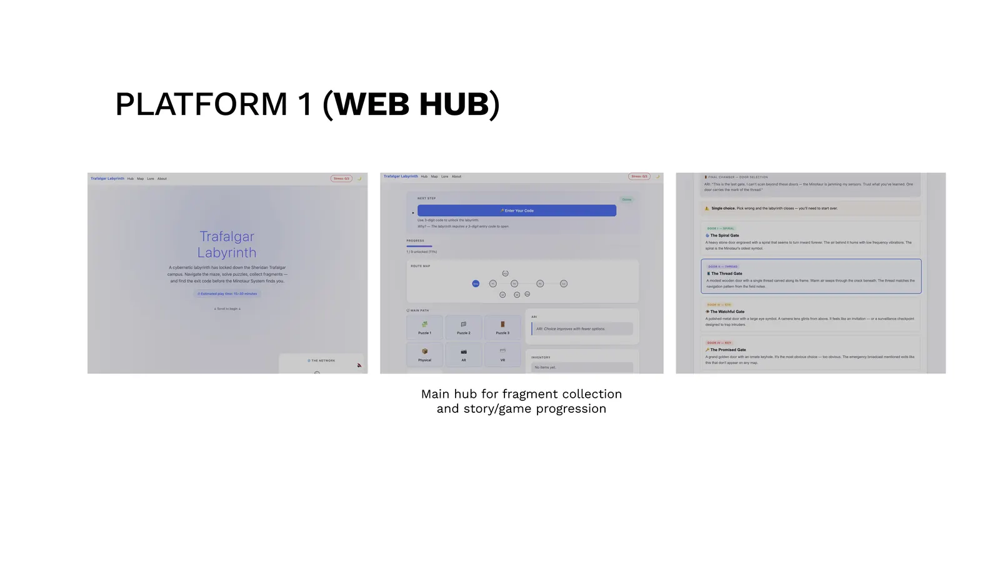
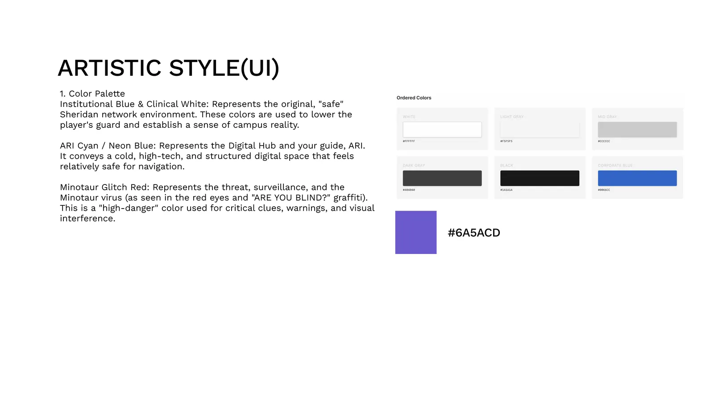
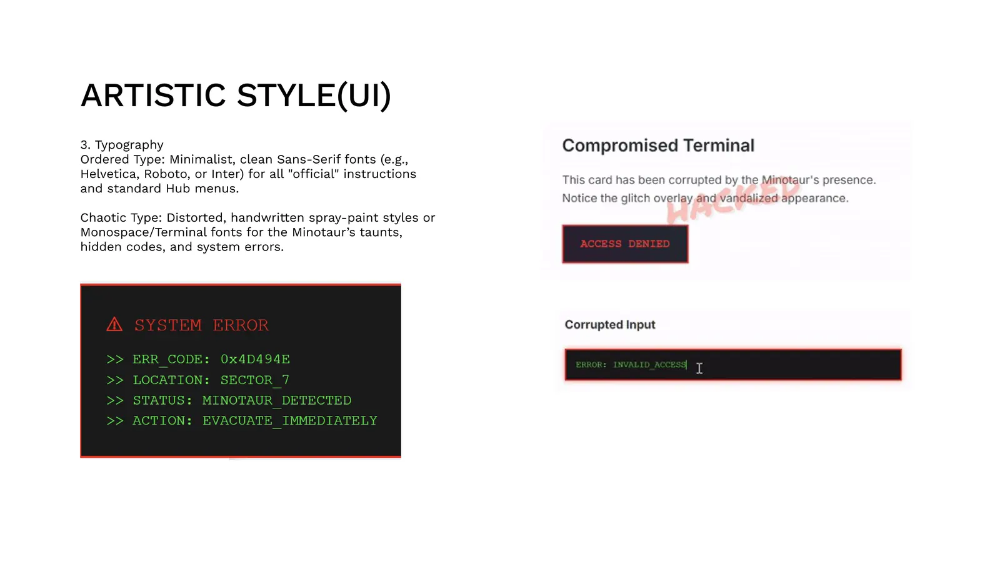
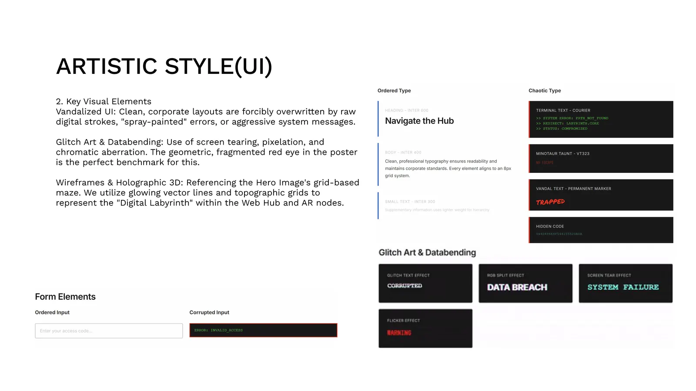
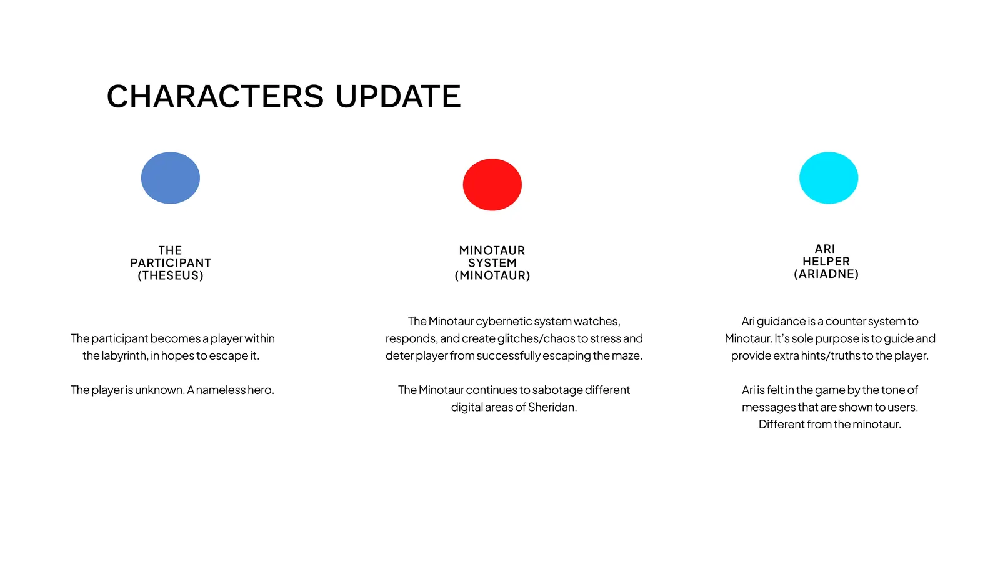
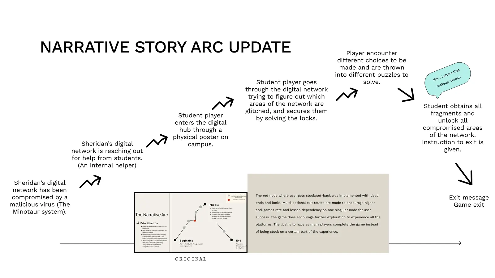
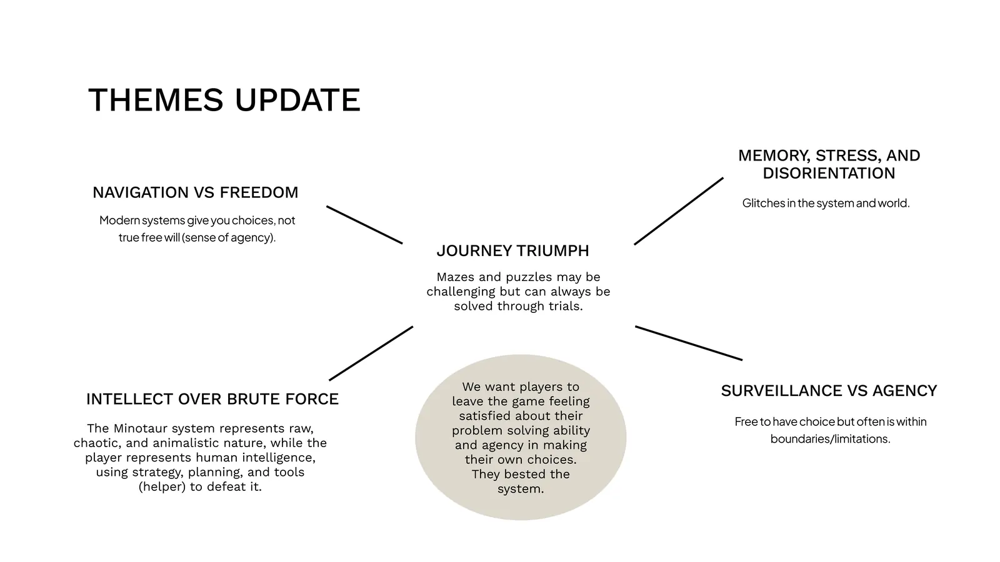
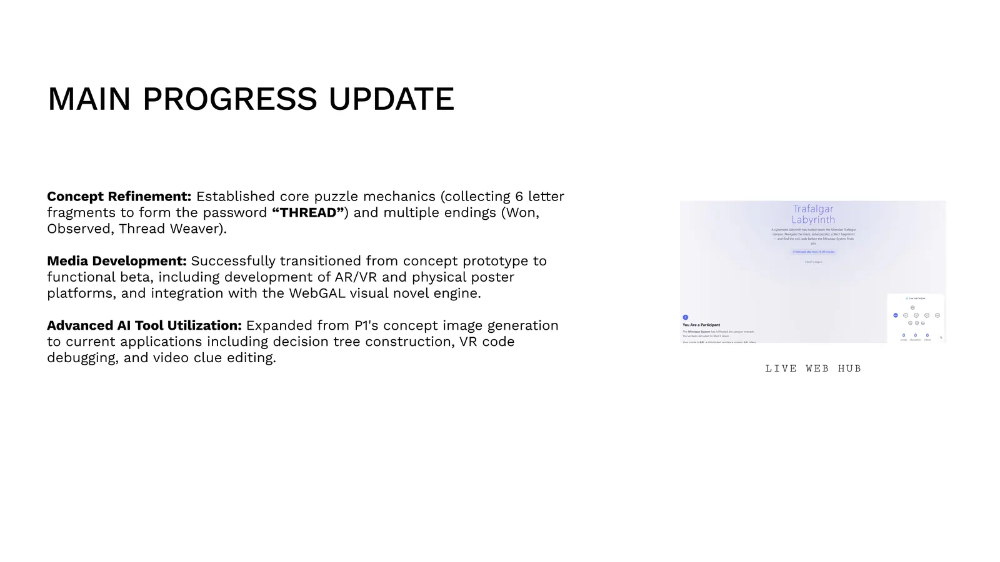
Every path became a node with an ID, a type (web, AR, VR, physical, rabbit hole), hint text and the nodes it unlocks. That data lives in a single config.js the hub reads at runtime, so the map is the game logic, not a drawing of it — we could rebalance a route without touching the engine.
每条路径都被拆成一个节点：ID、类型（网页、AR、VR、实体、兔子洞）、提示文字，以及它会解锁的节点。这些数据都放在一个 config.js 里，中枢在运行时读取——路线图就是游戏逻辑本身，而不是一张示意图。调整路线时完全不用改引擎。
每條路徑都被拆成一個節點：ID、類型（網頁、AR、VR、實體、兔子洞）、提示文字，以及它會解鎖的節點。這些資料都放在一個 config.js 裡，中樞在執行時讀取——路線圖就是遊戲邏輯本身，而不是一張示意圖。調整路線時完全不用改引擎。
すべての経路を、ID・種類（ウェブ、AR、VR、実物、ラビットホール）・ヒント文・解放するノードを持つノードにしました。データは 1 つの config.js にまとめ、ハブが実行時に読み込みます。マップは図ではなくゲームロジックそのもので、エンジンに触れずにルートを調整できました。
Chaque parcours est devenu un nœud avec un identifiant, un type (web, RA, RV, physique, terrier), un texte d’indice et les nœuds qu’il débloque. Ces données vivent dans un seul config.js lu par le hub à l’exécution : la carte est la logique du jeu, pas un dessin — on pouvait rééquilibrer un parcours sans toucher au moteur.
Jeder Weg wurde zu einem Knoten mit ID, Typ (Web, AR, VR, physisch, Kaninchenbau), Hinweistext und den Knoten, die er freischaltet. Diese Daten liegen in einer einzigen config.js, die der Hub zur Laufzeit liest – die Karte ist also die Spiellogik, keine Zeichnung davon. So ließ sich eine Route neu ausbalancieren, ohne die Engine anzufassen.
We kept the two modes pure instead of fusing them, which made each one predictable to test. Dynamic difficulty was prototyped and dropped: it made runs impossible to compare.
我们让两种模式各自保持纯粹，而不是揉成一种，这样每种模式都便于预测和测试。动态难度做过原型后被放弃：它让每一局都无法相互比较。
我們讓兩種模式各自保持純粹，而不是揉成一種，這樣每種模式都便於預測和測試。動態難度做過原型後被放棄：它讓每一局都無法相互比較。
2 つのモードは混ぜずにそれぞれ純粋に保ち、テストしやすくしました。動的難易度も試作しましたが、プレイ同士を比較できなくなるため見送りました。
Nous avons gardé les deux modes purs plutôt que de les fusionner, ce qui rendait chacun prévisible à tester. La difficulté dynamique a été prototypée puis abandonnée : elle rendait les parties impossibles à comparer.
Wir haben die beiden Modi rein gehalten, statt sie zu verschmelzen, wodurch jeder vorhersehbar zu testen war. Dynamischer Schwierigkeitsgrad wurde als Prototyp gebaut und verworfen: Er machte Durchgänge unvergleichbar.
Key decisions关键决策關鍵決策主な判断Décisions clésWichtige Entscheidungen
- Two structures, not one hybrid — Normal Mode is a pure string of pearls (Entry → P1 → P2 → P3 → Exit) with AR/VR branching off after P1; Hard Mode is a pure hub and spoke with no dependencies between the six fragment nodes. Pure structures were predictable to test and balance.
- XR as a shortcut, not a gate — the web puzzles are straightforward choices; the four AR and VR components are harder but pay out faster, with a fuller clue instead of one fragment. Players who find them skip ahead; players who miss them still finish.
- Three endings by design — Won, Observed and Thread Weaver depend on choices and efficiency, so the final decision carries weight.
- 两种结构，而不是一个混合体 —— 普通模式是纯粹的串珠式（入口 → P1 → P2 → P3 → 出口），AR/VR 在 P1 之后分出；困难模式是纯粹的中心辐射式，六个碎片节点之间没有依赖。结构纯粹，测试和平衡才可预测。
- XR 是捷径，不是关卡 —— 网页谜题是直截了当的选择题；四个 AR 和 VR 组件更难，但回报更快，给的是更完整的线索而不是单个碎片。找到它们的玩家可以跳关，错过的玩家照样能通关。
- 刻意设计的三个结局 —— Won、Observed 和 Thread Weaver 取决于选择和效率，所以最后的决定有分量。
- 兩種結構，而不是一個混合體 —— 普通模式是純粹的串珠式（入口 → P1 → P2 → P3 → 出口），AR/VR 在 P1 之後分出；困難模式是純粹的中心輻射式，六個碎片節點之間沒有依賴。結構純粹，測試和平衡才可預測。
- XR 是捷徑，不是關卡 —— 網頁謎題是直截了當的選擇題；四個 AR 和 VR 元件更難，但回報更快，給的是更完整的線索而不是單個碎片。找到它們的玩家可以跳關，錯過的玩家照樣能通關。
- 刻意設計的三個結局 —— Won、Observed 和 Thread Weaver 取決於選擇和效率，所以最後的決定有分量。
- 混ぜずに 2 つの構造 —— ノーマルモードは純粋なストリング・オブ・パールズ（入口 → P1 → P2 → P3 → 出口）で、AR/VR は P1 の後に分岐。ハードモードは純粋なハブ＆スポークで、6 つの欠片ノードの間に依存関係はありません。純粋な構造だからこそ、テストとバランス調整が予測できました。
- XR は関門ではなく近道 —— ウェブのパズルは素直な選択式。4 つの AR・VR 要素は難しいぶん見返りが早く、欠片 1 つではなく、より完全な手がかりが得られます。見つけた人は先へ飛べ、見逃した人も最後までたどり着けます。
- 意図した 3 つのエンディング —— Won、Observed、Thread Weaver は選択と効率で決まるので、最後の決断に重みが生まれます。
- Deux structures, pas un hybride — le mode Normal est un pur collier de perles (Entrée → P1 → P2 → P3 → Sortie) avec la RA/RV en embranchement après P1 ; le mode Difficile est une pure étoile, sans dépendance entre les six nœuds de fragments. Des structures pures restaient prévisibles à tester et à équilibrer.
- La XR comme raccourci, pas comme barrière — les énigmes web sont des choix simples ; les quatre composants RA et RV sont plus durs mais rapportent plus vite, un indice plus complet plutôt qu’un fragment. Ceux qui les trouvent sautent des étapes ; ceux qui les manquent finissent quand même.
- Trois fins voulues — Won, Observed et Thread Weaver dépendent des choix et de l’efficacité : la dernière décision pèse.
- Zwei Strukturen, kein Hybrid — der normale Modus ist eine reine Perlenkette (Einstieg → P1 → P2 → P3 → Ausgang), bei der AR/VR nach P1 abzweigen; der schwere Modus ist rein sternförmig, ohne Abhängigkeiten zwischen den sechs Fragment-Knoten. Reine Strukturen ließen sich vorhersehbar testen und ausbalancieren.
- XR als Abkürzung, nicht als Sperre — die Web-Rätsel sind einfache Auswahlaufgaben; die vier AR- und VR-Elemente sind schwerer, zahlen sich aber schneller aus, mit einem vollständigeren Hinweis statt eines einzelnen Fragments. Wer sie findet, springt voran; wer sie verpasst, kommt trotzdem ans Ziel.
- Drei Enden mit Absicht — Won, Observed und Thread Weaver hängen von Entscheidungen und Effizienz ab, damit die letzte Entscheidung Gewicht hat.
Dead ends & cut features死胡同与砍掉的功能死胡同與砍掉的功能行き止まりと削った機能Impasses et fonctions abandonnéesSackgassen & gestrichene Funktionen
- YouTube as an external platform — easy to bridge to, but not needed for the story. Video was embedded in the hub instead, bringing the “different medium” to the player rather than sending them away.
- 把 YouTube 当作外部平台 —— 接过去很容易，但故事并不需要。视频改为嵌入中枢，把“另一种媒介”带到玩家面前，而不是把玩家送走。
- 把 YouTube 當作外部平台 —— 接過去很容易，但故事並不需要。影片改為嵌入中樞，把“另一種媒介”帶到玩家面前，而不是把玩家送走。
- 外部プラットフォームとしての YouTube —— つなぐのは簡単でしたが、物語には不要でした。動画はハブに埋め込み、プレイヤーを外へ送り出すのではなく、「別のメディア」をプレイヤーのもとへ持ってきました。
- YouTube comme plateforme externe — facile à relier, mais inutile à l’histoire. La vidéo a été intégrée au hub, pour apporter le « autre support » au joueur au lieu de l’envoyer ailleurs.
- YouTube als externe Plattform — leicht anzubinden, aber für die Geschichte unnötig. Stattdessen wurde das Video in den Hub eingebettet und brachte das „andere Medium“ zu den Spielenden, statt sie wegzuschicken.
Outcome成果成果成果RésultatErgebnis
Complete node maps for both modes, a config-driven build and paper-prototype validation — stable enough to start full implementation.
两种模式的完整节点图、由配置驱动的构建，以及纸面原型的验证 —— 足够稳定，可以开始全面实现。
兩種模式的完整節點圖、由配置驅動的構建，以及紙面原型的驗證 —— 足夠穩定，可以開始全面實現。
両モードの完全なノードマップ、設定ファイル駆動の実装、紙プロトタイプでの検証。本格的な実装に入れるだけの安定性が得られました。
Des cartes de nœuds complètes pour les deux modes, une construction pilotée par la configuration et une validation sur prototype papier — assez stable pour lancer l’implémentation complète.
Vollständige Knotenkarten für beide Modi, ein konfigurationsgesteuerter Build und die Bestätigung durch einen Papierprototyp – stabil genug, um mit der vollständigen Umsetzung zu beginnen.
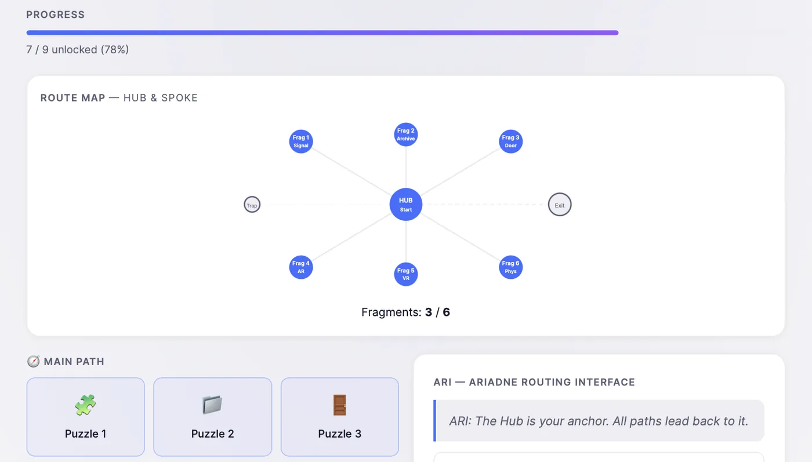
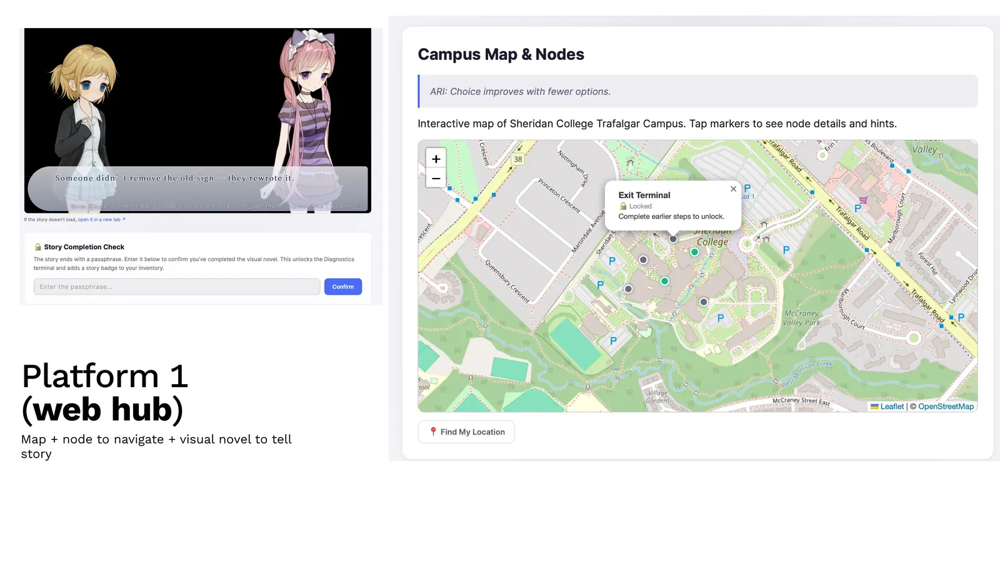
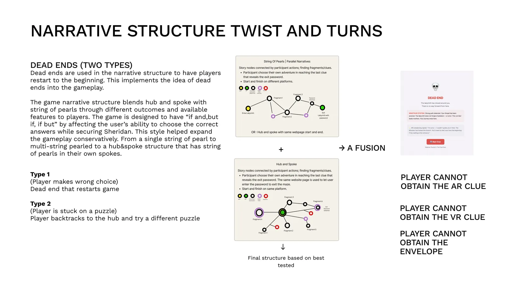
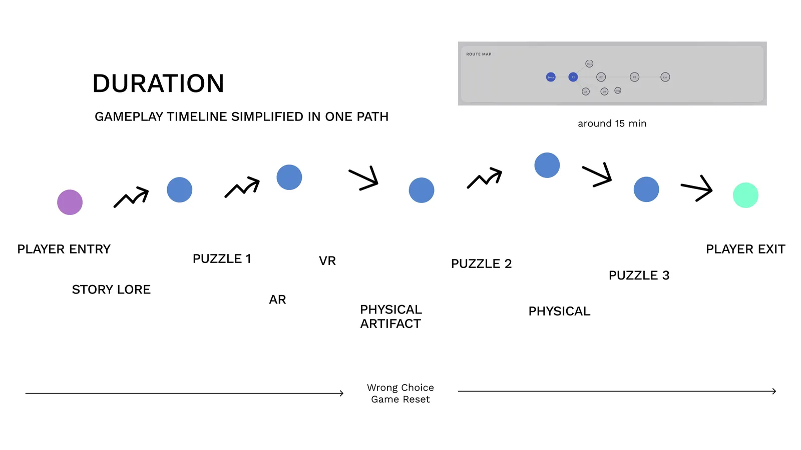
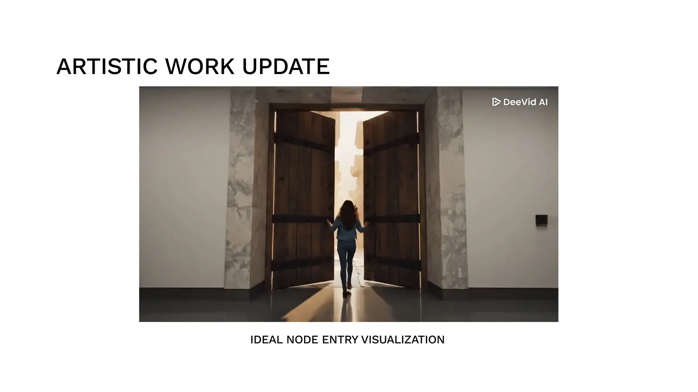
Four rounds of in-person testing on campus. Watching testers freeze right after the QR scan told us more than any survey could, and every change below came from that.
我们在校园里做了四轮面对面测试。亲眼看到测试者扫完二维码就愣住，比任何问卷都更有说服力——下面的每一项改动都来自这样的观察。
我們在校園裡做了四輪面對面測試。親眼看到測試者掃完 QR Code 就愣住，比任何問卷都更有說服力——下面的每一項改動都來自這樣的觀察。
キャンパスで対面テストを 4 回行いました。QR コードを読み取った直後に固まってしまうテスターを見ることは、どんなアンケートよりも多くを教えてくれました。以下の変更はすべてそこから生まれています。
Quatre sessions de tests en personne sur le campus. Voir des testeurs se figer juste après le scan du QR code nous en a appris plus qu’un sondage, et chaque changement ci-dessous en découle.
Vier Runden persönlicher Tests auf dem Campus. Zu sehen, wie Testpersonen direkt nach dem QR-Scan erstarrten, verriet uns mehr als jede Umfrage – und jede Änderung unten ging darauf zurück.
- User guide — testers didn’t understand the objective after scanning.
- Progress bar and route map — players lost track of which fragments they had.
- Progress import/export — 15 minutes was optimistic, so a run can be resumed later with a code.
- A real ending screen — typing the password and simply stopping felt abrupt.
- Gentler pressure — a countdown timer became a subtle heat meter, and a free-text ARI chatbot became quick-action hint buttons.
- 新手指引——测试者扫码后不明白目标是什么。
- 进度条与路线图——玩家记不清自己拿到了哪些碎片。
- 进度导入/导出——15 分钟的预估偏乐观，现在可以凭一段代码稍后继续。
- 真正的结局页面——输完密码就戛然而止，太突兀了。
- 更温和的压迫感——倒计时改成了含蓄的“热度”指示，自由输入的 ARI 聊天机器人改成了快捷提示按钮。
- 新手指引——測試者掃描後不明白目標是什麼。
- 進度條與路線圖——玩家記不清自己拿到了哪些碎片。
- 進度匯入/匯出——15 分鐘的預估偏樂觀，現在可以憑一段代碼稍後繼續。
- 真正的結局頁面——輸完密碼就戛然而止，太突兀了。
- 更溫和的壓迫感——倒計時改成了含蓄的“熱度”指示，自由輸入的 ARI 聊天機器人改成了快捷提示按鈕。
- ユーザーガイド——スキャン後、テスターは目的を理解できていませんでした。
- 進行バーとルートマップ——どの欠片を持っているか、プレイヤーが把握できなくなっていました。
- 進行状況のインポート／エクスポート——15 分という見積もりは楽観的だったため、コードで後から再開できるようにしました。
- きちんとしたエンディング画面——パスワードを入れて終わるだけでは唐突でした。
- やわらかいプレッシャー——カウントダウンは控えめなヒートメーターに、自由入力の ARI チャットボットはワンタップのヒントボタンに変えました。
- Guide de démarrage — après le scan, les testeurs ne comprenaient pas l’objectif.
- Barre de progression et carte — les joueurs ne savaient plus quels fragments ils avaient.
- Import/export de la progression — 15 minutes était optimiste ; une partie peut reprendre plus tard grâce à un code.
- Un véritable écran de fin — taper le mot de passe puis s’arrêter net semblait abrupt.
- Une pression plus douce — le compte à rebours est devenu une jauge de chaleur discrète, et le chatbot ARI en texte libre, des boutons d’indice rapides.
- Spielanleitung — nach dem Scan verstanden die Testpersonen das Ziel nicht.
- Fortschrittsbalken und Routenkarte — die Spielenden verloren den Überblick, welche Fragmente sie schon hatten.
- Fortschritt importieren/exportieren — 15 Minuten waren optimistisch, also lässt sich ein Durchgang später per Code fortsetzen.
- Ein echter Abschlussbildschirm — das Passwort einzutippen und dann einfach aufzuhören, wirkte abrupt.
- Sanfterer Druck — aus einem Countdown wurde eine dezente Hitzeanzeige, und aus einem Freitext-Chatbot für ARI wurden Hinweis-Buttons für schnelle Aktionen.
Platform-specific findings各平台的测试发现各平台的測試發現プラットフォームごとの発見Constats par plateformeErkenntnisse je Plattform
- AR — marker-scanning instructions needed to be clearer; touch selection required aiming; content had to fit both the phone and the room; engagement was short, so the AR needed more depth.
- VR — players needed clearer goals; the first version lasted about ten seconds and was too easy; item sizes had to make sense at a phone user’s eye level; lighting and alignment needed tuning; engagement held for one or two tries, so it had to work first time.
- Physical — posters and markers were taken down in hallways, study areas, near vending machines and in the library, so artifacts moved to spots that stayed put for three to four days; library and campus hours limited play, so redundant clue routes were added.
- ARI robot — tested for the accuracy of its help, its response to voices and how it fit into play; the digital ARI had to stay in sync with the physical one.
- AR —— 扫描标记的说明要更清楚；触摸选择需要瞄准；内容要同时适配手机和周围空间；参与感太短，AR 需要更多深度。
- VR —— 玩家需要更明确的目标；第一版只有大约十秒，太简单；物品大小要符合手机用户的视线高度；光照和对齐需要调整；新鲜感只维持一两次，所以必须第一次就能用。
- 实体 —— 走廊、自习区、自动售货机旁和图书馆里的海报和标记会被撕掉，所以道具挪到了能保留三到四天的位置；图书馆和校园的开放时间限制了游玩，所以增加了冗余的线索路线。
- ARI 机器人 —— 测试了帮助内容的准确性、对语音的响应，以及它在游戏中的衔接；数字版 ARI 必须与实体 ARI 保持同步。
- AR —— 掃描標記的說明要更清楚；觸控選擇需要瞄準；內容要同時適配手機和周圍空間；參與感太短，AR 需要更多深度。
- VR —— 玩家需要更明確的目標；第一版只有大約十秒，太簡單；物品大小要符合手機使用者的視線高度；光照和對齊需要調整；新鮮感只維持一兩次，所以必須第一次就能用。
- 實體 —— 走廊、自習區、自動售貨機旁和圖書館裡的海報和標記會被撕掉，所以道具挪到了能保留三到四天的位置；圖書館和校園的開放時間限制了遊玩，所以增加了冗餘的線索路線。
- ARI 機器人 —— 測試了幫助內容的準確性、對語音的響應，以及它在遊戲中的銜接；數位版 ARI 必須與實體 ARI 保持同步。
- AR —— マーカーを読み取る説明をもっと明確に。タッチでの選択には狙いが必要。コンテンツはスマホと周囲の空間の両方に収まる必要がある。没入が短く、AR にはもっと深みが要る。
- VR —— 目的をもっと明確に。最初の版は 10 秒ほどで終わり、簡単すぎた。物の大きさはスマホを持つ人の目線に合わせる必要がある。照明と位置合わせは調整が必要。関心が続くのは 1〜2 回なので、1 回目で確実に動かなければならない。
- 実物 —— 廊下、自習スペース、自動販売機のそば、図書館ではポスターやマーカーがはがされたため、3〜4 日は残る場所に移しました。図書館とキャンパスの開館時間がプレイを制限するので、手がかりのルートを重ねて用意しました。
- ARI ロボット —— ヘルプの正確さ、声への反応、ゲームへの組み込みを検証しました。デジタルの ARI は実物の ARI と同期し続ける必要がありました。
- RA — les instructions de scan des marqueurs devaient être plus claires ; la sélection tactile demandait de viser ; le contenu devait tenir à la fois dans le téléphone et dans la pièce ; l’engagement était bref, la RA manquait de profondeur.
- RV — les joueurs avaient besoin d’objectifs plus clairs ; la première version durait une dizaine de secondes et était trop facile ; la taille des objets devait avoir du sens à hauteur d’yeux sur un téléphone ; éclairage et alignement étaient à régler ; l’intérêt tenait une ou deux tentatives, il fallait donc que tout marche du premier coup.
- Physique — affiches et marqueurs étaient retirés dans les couloirs, les zones d’étude, près des distributeurs et à la bibliothèque : les objets ont migré vers des endroits où ils restaient trois à quatre jours ; les horaires de la bibliothèque et du campus limitaient le jeu, d’où des pistes d’indices redondantes.
- Le robot ARI — testé sur la justesse de son aide, sa réaction aux voix et son intégration au jeu ; l’ARI numérique devait rester synchronisé avec l’ARI physique.
- AR — die Anleitung zum Scannen der Marker musste klarer werden; die Auswahl per Berührung erforderte Zielen; Inhalte mussten sowohl aufs Handy als auch in den Raum passen; das Interesse hielt nur kurz, die AR brauchte mehr Tiefe.
- VR — die Spielenden brauchten klarere Ziele; die erste Version dauerte etwa zehn Sekunden und war zu leicht; Objektgrößen mussten auf Augenhöhe einer Person mit Handy Sinn ergeben; Licht und Ausrichtung brauchten Feinschliff; das Interesse hielt ein oder zwei Versuche, also musste alles beim ersten Mal funktionieren.
- Physisch — Plakate und Marker wurden in Fluren, Lernbereichen, an Getränkeautomaten und in der Bibliothek abgenommen, also wanderten die Objekte an Stellen, an denen sie drei bis vier Tage hingen blieben; die Öffnungszeiten von Bibliothek und Campus begrenzten das Spiel, darum kamen redundante Hinweiswege hinzu.
- ARI-Roboter — getestet wurden die Genauigkeit seiner Hilfe, die Reaktion auf Stimmen und die Einbindung ins Spiel; die digitale ARI musste mit der physischen synchron bleiben.
Outcome成果成果成果RésultatErgebnis
A tested, deployable experience: four testing-driven changes turned a confusing prototype into a guided journey.
一个经过测试、可以上线的体验：四项由测试推动的改动，把一个让人困惑的原型变成了有引导的旅程。
一個經過測試、可以上線的體驗：四項由測試推動的改動，把一個讓人困惑的原型變成了有引導的旅程。
テストを経て公開できる体験。テストから生まれた 4 つの変更が、混乱する試作を、案内のある旅に変えました。
Une expérience testée et déployable : quatre changements nés des tests ont transformé un prototype déroutant en parcours guidé.
Ein getestetes, veröffentlichbares Erlebnis: Vier aus den Tests abgeleitete Änderungen machten aus einem verwirrenden Prototyp eine geführte Reise.
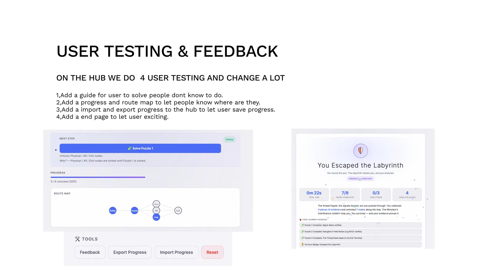
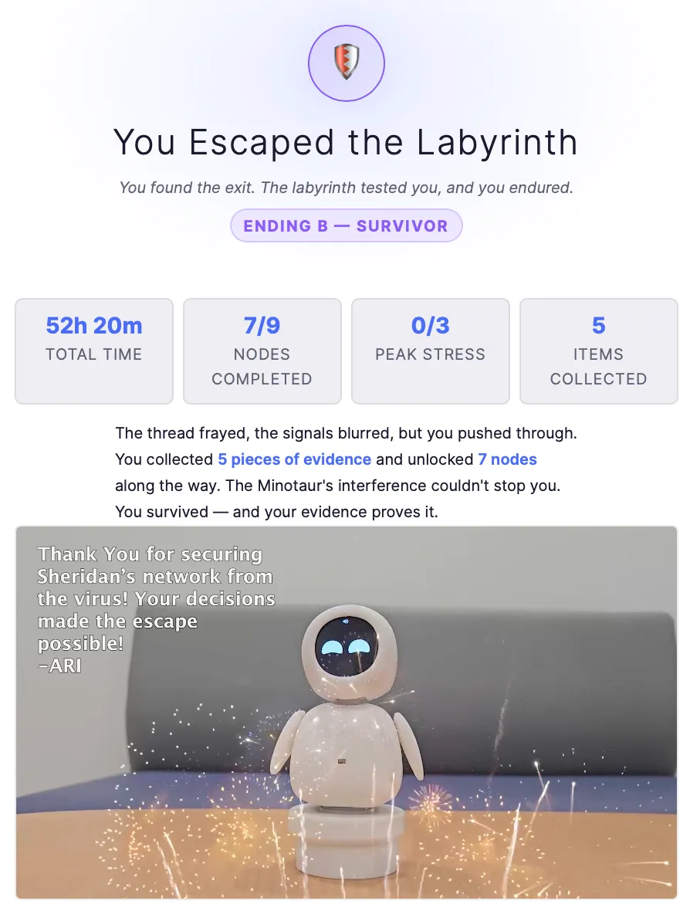
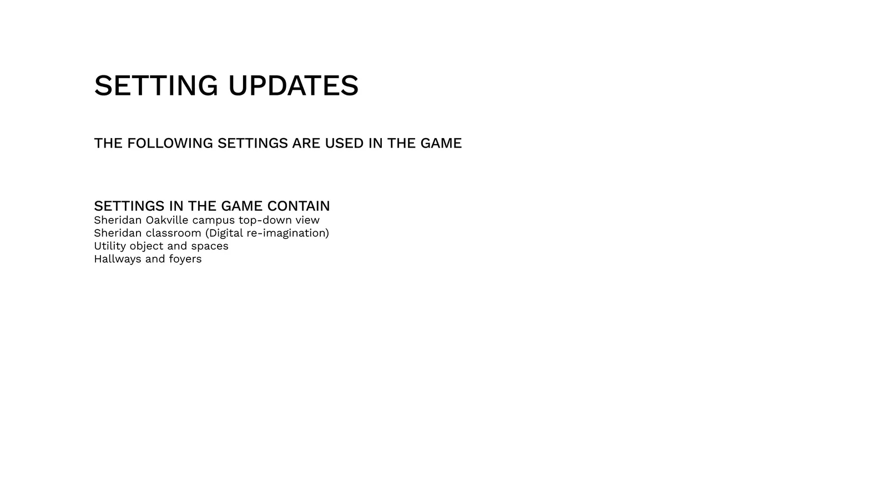
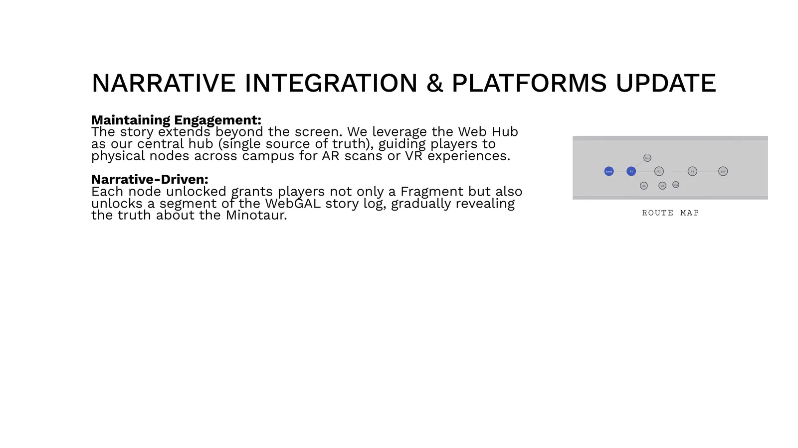
Interaction points & rabbit holes交互点与兔子洞互動點與兔子洞インタラクションポイントとラビットホールPoints d’interaction et terriersInteraktionspunkte & Kaninchenbaue
Every space in the game is a digital environment ARI has hacked to reach the player. Four ideas shaped the interaction points:
游戏里的每个空间，都是 ARI 为了联系玩家而黑进去的数字环境。四个想法塑造了这些交互点：
遊戲裡的每個空間，都是 ARI 為了聯絡玩家而黑進去的數位環境。四個想法塑造了這些互動點：
ゲームの中のどの空間も、ARI がプレイヤーに届くためにハッキングしたデジタル環境です。インタラクションポイントは 4 つの考え方から生まれました。
Chaque espace du jeu est un environnement numérique qu’ARI a piraté pour joindre le joueur. Quatre idées ont façonné les points d’interaction :
Jeder Raum im Spiel ist eine digitale Umgebung, die ARI gehackt hat, um die Spielenden zu erreichen. Vier Ideen prägten die Interaktionspunkte:
- ARI’s distributed access points — the campus system is compromised, so ARI makes access points findable all over the school. Physical artifacts are a digital being reaching into physical space, and nobody can say who put them there.
- Prior players — earlier players helped place artifacts for the next ones, and were eliminated, abandoned or lost in the maze. That history gives each access point weight.
- The THREAD shortcut — players can guess the exit password at any time. Hard Mode demands every fragment; Normal Mode rewards clever shortcuts.
- ARI’s physical form — players who finish the full experience meet ARI in person, a reward that closes the loop between the digital labyrinth and the campus.
- ARI 分散各处的接入点 —— 校园系统已被攻陷，所以 ARI 在学校各处留下可以找到的接入点。实体道具是一个数字存在伸进现实空间的手，没人说得清是谁放的。
- 先前的玩家 —— 之前的玩家帮忙为后来者放置道具，然后被淘汰、被抛弃，或迷失在迷宫里。这段历史让每个接入点都有了分量。
- THREAD 捷径 —— 玩家随时都可以猜出口密码。困难模式要求集齐所有碎片；普通模式奖励聪明的捷径。
- ARI 的实体形态 —— 完成整个体验的玩家会在现实中见到 ARI，这份奖励把数字迷宫与校园连成一个闭环。
- ARI 分散各處的接入點 —— 校園系統已被攻陷，所以 ARI 在學校各處留下可以找到的接入點。實體道具是一個數位存在伸進現實空間的手，沒人說得清是誰放的。
- 先前的玩家 —— 之前的玩家幫忙為後來者放置道具，然後被淘汰、被拋棄，或迷失在迷宮裡。這段歷史讓每個接入點都有了分量。
- THREAD 捷徑 —— 玩家隨時都可以猜出口密碼。困難模式要求集齊所有碎片；普通模式獎勵聰明的捷徑。
- ARI 的實體形態 —— 完成整個體驗的玩家會在現實中見到 ARI，這份獎勵把數位迷宮與校園連成一個閉環。
- ARI の分散したアクセスポイント —— キャンパスのシステムは侵されているため、ARI は学校中に見つけられるアクセスポイントを用意します。実物の小道具は、デジタルな存在が物理空間に手を伸ばしたもの。誰が置いたのかは誰にもわかりません。
- 先行プレイヤー —— 以前のプレイヤーは次の人のために小道具を置く手伝いをし、その後、排除され、見捨てられ、あるいは迷宮で迷いました。その歴史が、アクセスポイントの一つひとつに重みを与えます。
- THREAD の近道 —— プレイヤーはいつでも出口のパスワードを当てられます。ハードモードではすべての欠片が必要で、ノーマルモードでは機転の利いた近道が報われます。
- ARI の実体 —— 体験を最後までやり遂げたプレイヤーは ARI に実際に会えます。デジタルの迷宮とキャンパスをつなぐ、締めくくりのご褒美です。
- Les points d’accès dispersés d’ARI — le système du campus est compromis : ARI rend des points d’accès repérables partout dans l’école. Les objets physiques sont un être numérique qui s’avance dans l’espace réel, et personne ne sait qui les a posés.
- Les joueurs précédents — d’anciens joueurs ont aidé à placer des objets pour les suivants, puis ont été éliminés, abandonnés ou perdus dans le labyrinthe. Cette histoire donne du poids à chaque point d’accès.
- Le raccourci THREAD — on peut deviner le mot de passe de sortie à tout moment. Le mode Difficile exige tous les fragments ; le mode Normal récompense les raccourcis astucieux.
- La forme physique d’ARI — ceux qui terminent l’expérience complète rencontrent ARI en vrai : une récompense qui referme la boucle entre le labyrinthe numérique et le campus.
- ARIs verteilte Zugangspunkte — das Campus-System ist befallen, also macht ARI überall in der Hochschule Zugangspunkte auffindbar. Die physischen Objekte sind ein digitales Wesen, das in den realen Raum greift – und niemand kann sagen, wer sie dort hingelegt hat.
- Frühere Spielende — frühere Spielende halfen, Objekte für die nächsten zu platzieren, und wurden ausgeschaltet, zurückgelassen oder verirrten sich im Labyrinth. Diese Vorgeschichte gibt jedem Zugangspunkt Gewicht.
- Die THREAD-Abkürzung — das Ausgangspasswort lässt sich jederzeit erraten. Der schwere Modus verlangt jedes Fragment; der normale Modus belohnt clevere Abkürzungen.
- ARIs physische Gestalt — wer das ganze Erlebnis abschließt, trifft ARI persönlich: eine Belohnung, die den Kreis zwischen digitalem Labyrinth und Campus schließt.
Rabbit holes兔子洞兔子洞ラビットホールTerriersKaninchenbaue
- R1 — Entry (QR code): players start somewhere physically safe; posters, QR codes and campus wayfinding lead into a mysterious digital world.
- R2 — Web pages (hub and WebGAL): lore, nested stories and hints for the game.
- R3 — Video clues: NPC footage filmed on campus and embedded in the hub.
- R4 — AR clues: a scene that resolves into a fragment.
- R5 — Physical clues: posters, maps, stickers and scannable QR codes around campus.
- R1 — 入口（二维码）：玩家从一个现实中安全的地方出发；海报、二维码和校园导视把他们引进一个神秘的数字世界。
- R2 — 网页（中枢与 WebGAL）：世界观、层层嵌套的故事和游戏提示。
- R3 — 视频线索：在校园里拍摄、嵌入中枢的 NPC 影像。
- R4 — AR 线索：一个解开后得到碎片的场景。
- R5 — 实体线索：校园各处的海报、地图、贴纸和可扫描的二维码。
- R1 — 入口（二維碼）：玩家從一個現實中安全的地方出發；海報、二維碼和校園導視把他們引進一個神秘的數位世界。
- R2 — 網頁（中樞與 WebGAL）：世界觀、層層巢狀的故事和遊戲提示。
- R3 — 影片線索：在校園裡拍攝、嵌入中樞的 NPC 影像。
- R4 — AR 線索：一個解開後得到碎片的場景。
- R5 — 實體線索：校園各處的海報、地圖、貼紙和可掃描的二維碼。
- R1 — 入口（QR コード）：プレイヤーは物理的に安全な場所から始まり、ポスター、QR コード、キャンパスの案内表示が謎めいたデジタル世界へと導きます。
- R2 — ウェブページ（ハブと WebGAL）：世界観、入れ子になった物語、ゲームのヒント。
- R3 — 動画の手がかり：キャンパスで撮影し、ハブに埋め込んだ NPC の映像。
- R4 — AR の手がかり：解くと欠片が得られるシーン。
- R5 — 実物の手がかり：キャンパスのあちこちにあるポスター、地図、ステッカー、読み取れる QR コード。
- R1 — Entrée (QR code) : on part d’un lieu physiquement sûr ; affiches, QR codes et signalétique du campus mènent vers un monde numérique mystérieux.
- R2 — Pages web (hub et WebGAL) : lore, récits imbriqués et indices de jeu.
- R3 — Indices vidéo : des séquences de PNJ tournées sur le campus et intégrées au hub.
- R4 — Indices en RA : une scène qui se résout en fragment.
- R5 — Indices physiques : affiches, plans, autocollants et QR codes à scanner sur le campus.
- R1 — Einstieg (QR-Code): Die Spielenden beginnen an einem physisch sicheren Ort; Plakate, QR-Codes und die Campus-Beschilderung führen in eine geheimnisvolle digitale Welt.
- R2 — Webseiten (Hub und WebGAL): Lore, verschachtelte Geschichten und Hinweise zum Spiel.
- R3 — Video-Hinweise: NPC-Aufnahmen, auf dem Campus gedreht und in den Hub eingebettet.
- R4 — AR-Hinweise: eine Szene, die sich zu einem Fragment auflöst.
- R5 — Physische Hinweise: Plakate, Karten, Aufkleber und scannbare QR-Codes auf dem Campus.
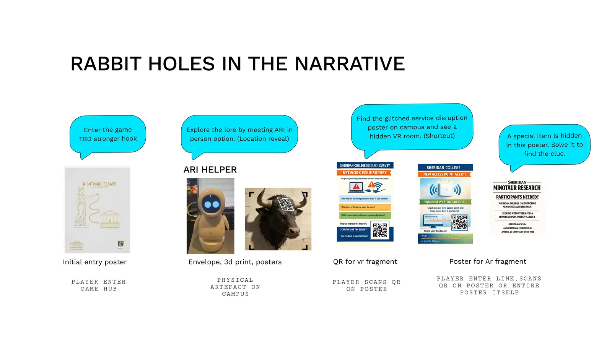
Interaction-point board in Figma ↗
Tableau des points d’interaction sur Figma ↗
Board der Interaktionspunkte in Figma ↗
The six platforms六个平台六個平台6 つのプラットフォームLes six plateformesDie sechs Plattformen
Every platform hands back to the hub. When VR crashed on one tester’s phone, the web hub still carried them to a valid ending.
每个平台最终都会回到中枢。有一位测试者的手机上 VR 崩溃了，但网页中枢依然让这局游戏走到了有效的结局。
每個平台最終都會回到中樞。有一位測試者的手機上 VR 崩潰了，但網頁中樞依然讓這局遊戲走到了有效的結局。
どのプラットフォームも最後はハブに戻ります。あるテスターのスマートフォンで VR が落ちたときも、ウェブハブがきちんとしたエンディングまで導きました。
Chaque plateforme renvoie au hub. Quand la RV a planté sur le téléphone d’un testeur, le hub web l’a tout de même mené à une fin valide.
Jede Plattform gibt an den Hub zurück. Als VR auf dem Handy einer Testperson abstürzte, brachte der Web-Hub sie trotzdem zu einem gültigen Ende.
- Web game hub — the central nervous system, one page players always return to. Code entry mimics a security prompt, stages unlock progressively, click-choice puzzles carry hints, and optional story nodes reward exploration without blocking the critical path.
- WebGAL visual novel — longer narrative scenes the puzzle-first hub had no room for, without slowing puzzle-focused players.
- Physical artifacts — posters with QR and AR markers as gateways, the ARI helper model, and an envelope hidden in the library with a handwritten clue from ARI.
- VR room — a nightmare maze-room whose hotspots hold story fragments and password pieces; the Minotaur is frozen inside a safe zone ARI carved out. Headsets are optional; it runs on phones.
- AR overlay — scanning the marker poster reveals t_read, the shortcut clue: a moment of delight, never a gate.
- Endgame — three exits, Won, Observed and Thread Weaver, so the player decides how they leave.
- 网页游戏中枢 —— 中枢神经，玩家总会回到的那一页。输入代码像是一道安全验证，关卡逐步解锁，点选式谜题带提示，可选的故事节点奖励探索，却不挡住主线。
- WebGAL 视觉小说 —— 以谜题为先的中枢放不下的长篇叙事场景，又不会拖慢只想解谜的玩家。
- 实体道具 —— 带二维码和 AR 标记的海报作为入口，ARI 助手模型，以及藏在图书馆、附有 ARI 手写线索的信封。
- VR 房间 —— 一个噩梦迷宫房间，热点里藏着故事碎片和密码片段；米诺陶被冻结在 ARI 开辟的安全区里。头显可有可无，手机上也能玩。
- AR 叠层 —— 扫描标记海报会显示 t_read，也就是捷径线索：是一个惊喜时刻，从来不是关卡。
- 终局 —— 三个出口：Won、Observed 和 Thread Weaver，由玩家决定怎样离开。
- 網頁遊戲中樞 —— 中樞神經，玩家總會回到的那一頁。輸入程式碼像是一道安全驗證，關卡逐步解鎖，點選式謎題帶提示，可選的故事節點獎勵探索，卻不擋住主線。
- WebGAL 視覺小說 —— 以謎題為先的中樞放不下的長篇敘事場景，又不會拖慢只想解謎的玩家。
- 實體道具 —— 帶二維碼和 AR 標記的海報作為入口，ARI 助手模型，以及藏在圖書館、附有 ARI 手寫線索的信封。
- VR 房間 —— 一個噩夢迷宮房間，熱點裡藏著故事碎片和密碼片段；米諾陶被凍結在 ARI 開闢的安全區裡。頭顯可有可無，手機上也能玩。
- AR 疊層 —— 掃描標記海報會顯示 t_read，也就是捷徑線索：是一個驚喜時刻，從來不是關卡。
- 終局 —— 三個出口：Won、Observed 和 Thread Weaver，由玩家決定怎樣離開。
- ウェブゲームハブ —— 中枢神経であり、プレイヤーがいつも戻ってくる 1 ページ。コード入力はセキュリティ認証のようで、ステージは順に解放され、選択式のパズルにはヒントがあり、任意のストーリーノードは本筋を妨げずに探索に報います。
- WebGAL ビジュアルノベル —— パズル優先のハブには収まらない長めの物語シーンを、パズル好きのプレイヤーを待たせずに届けます。
- 実物の小道具 —— 入口となる QR と AR マーカー付きのポスター、ARI のヘルパーモデル、そして ARI の手書きの手がかりが入った、図書館に隠した封筒。
- VR ルーム —— ホットスポットに物語の欠片とパスワードの断片が隠れた悪夢の迷路部屋。ミノタウロスは ARI がつくった安全地帯の中で凍結されています。ヘッドセットは任意で、スマホでも動きます。
- AR オーバーレイ —— マーカーポスターを読み取ると、近道の手がかり t_read が現れます。関門ではなく、ちょっとした喜びの瞬間です。
- エンドゲーム —— Won、Observed、Thread Weaver の 3 つの出口。どう去るかはプレイヤーが決めます。
- Hub de jeu web — le système nerveux central, une page vers laquelle on revient toujours. La saisie de code imite une invite de sécurité, les étapes se débloquent progressivement, les énigmes à choix offrent des indices, et des nœuds d’histoire facultatifs récompensent l’exploration sans bloquer le chemin principal.
- Visual novel WebGAL — les scènes narratives plus longues que le hub, centré sur les énigmes, ne pouvait accueillir, sans ralentir ceux qui veulent surtout résoudre.
- Objets physiques — des affiches à QR code et marqueurs RA comme portes d’entrée, le modèle d’assistant ARI, et une enveloppe cachée à la bibliothèque avec un indice manuscrit d’ARI.
- Salle RV — une salle-labyrinthe de cauchemar dont les points chauds cachent fragments d’histoire et morceaux de mot de passe ; le Minotaure y est figé dans une zone sûre ménagée par ARI. Le casque est facultatif ; tout fonctionne sur téléphone.
- Surcouche RA — scanner l’affiche-marqueur révèle t_read, l’indice du raccourci : un moment de plaisir, jamais une barrière.
- Fin de partie — trois sorties, Won, Observed et Thread Weaver : c’est le joueur qui décide comment il part.
- Web-Spiel-Hub — das zentrale Nervensystem, eine Seite, zu der man immer zurückkehrt. Die Code-Eingabe ahmt eine Sicherheitsabfrage nach, Stufen schalten sich nach und nach frei, Auswahlrätsel enthalten Hinweise, und optionale Story-Knoten belohnen Erkundung, ohne den Hauptweg zu blockieren.
- WebGAL-Visual-Novel — längere Erzählszenen, für die im rätselorientierten Hub kein Platz war, ohne Rätselfans auszubremsen.
- Physische Objekte — Plakate mit QR- und AR-Markern als Tore, das ARI-Helfermodell und ein in der Bibliothek versteckter Umschlag mit einem handschriftlichen Hinweis von ARI.
- VR-Raum — ein albtraumhafter Labyrinthraum, dessen Hotspots Story-Fragmente und Passwortteile enthalten; der Minotaurus ist in einer Schutzzone eingefroren, die ARI geschaffen hat. Ein Headset ist optional; alles läuft auf dem Handy.
- AR-Overlay — der Scan des Marker-Plakats enthüllt t_read, den Hinweis zur Abkürzung: ein kleiner Glücksmoment, nie eine Sperre.
- Endspiel — drei Ausgänge, Won, Observed und Thread Weaver: Die Spielenden entscheiden, wie sie gehen.
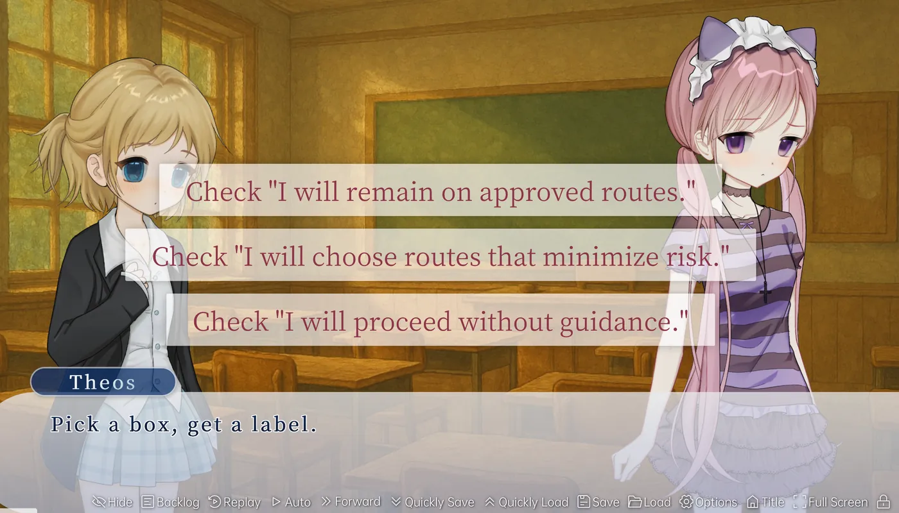
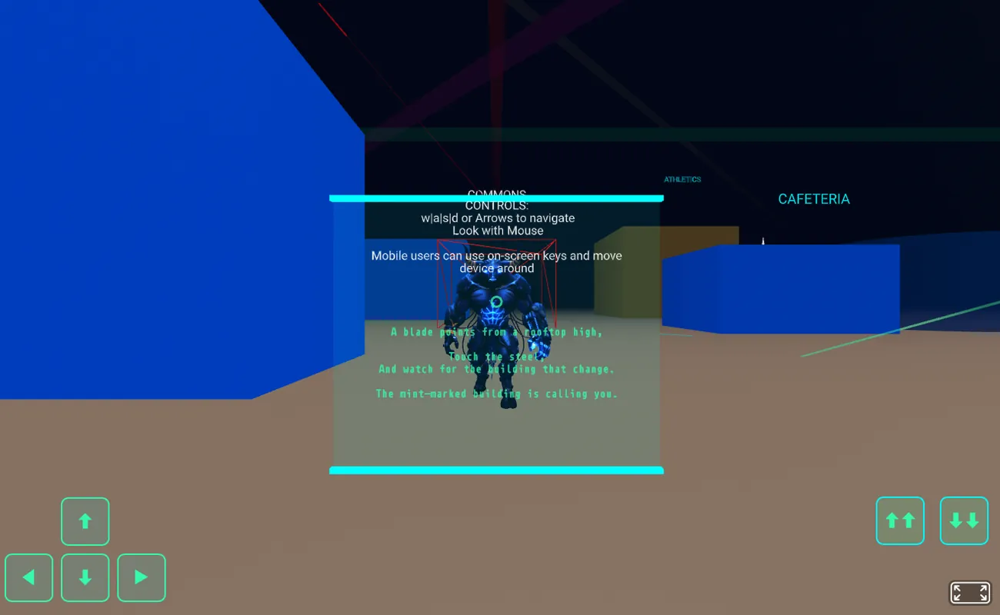
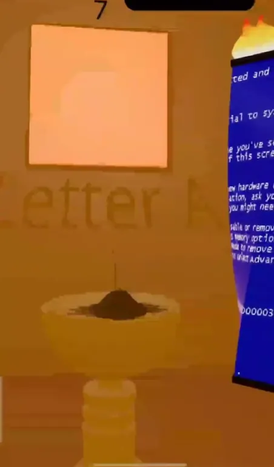
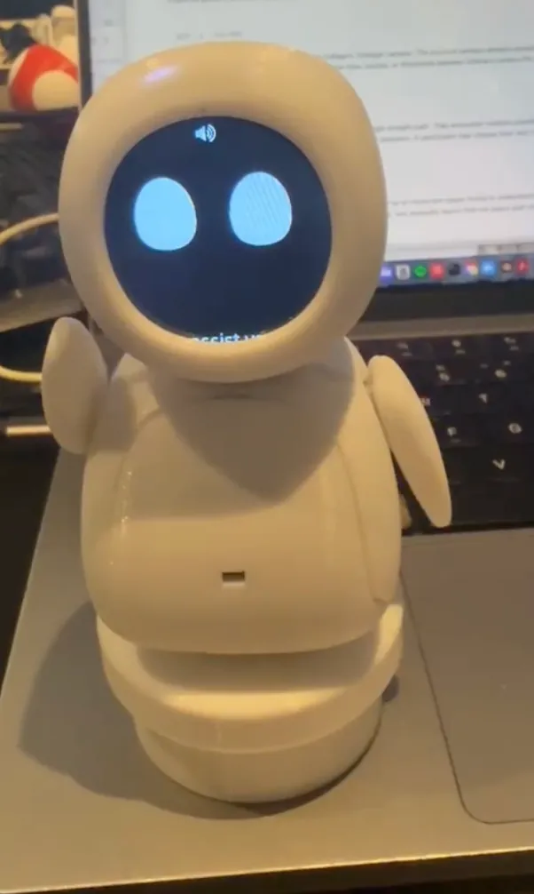
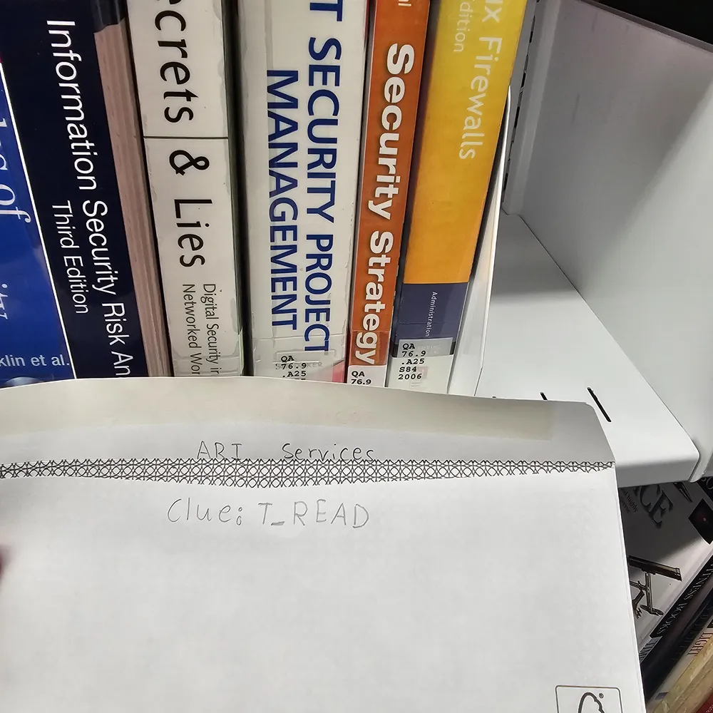
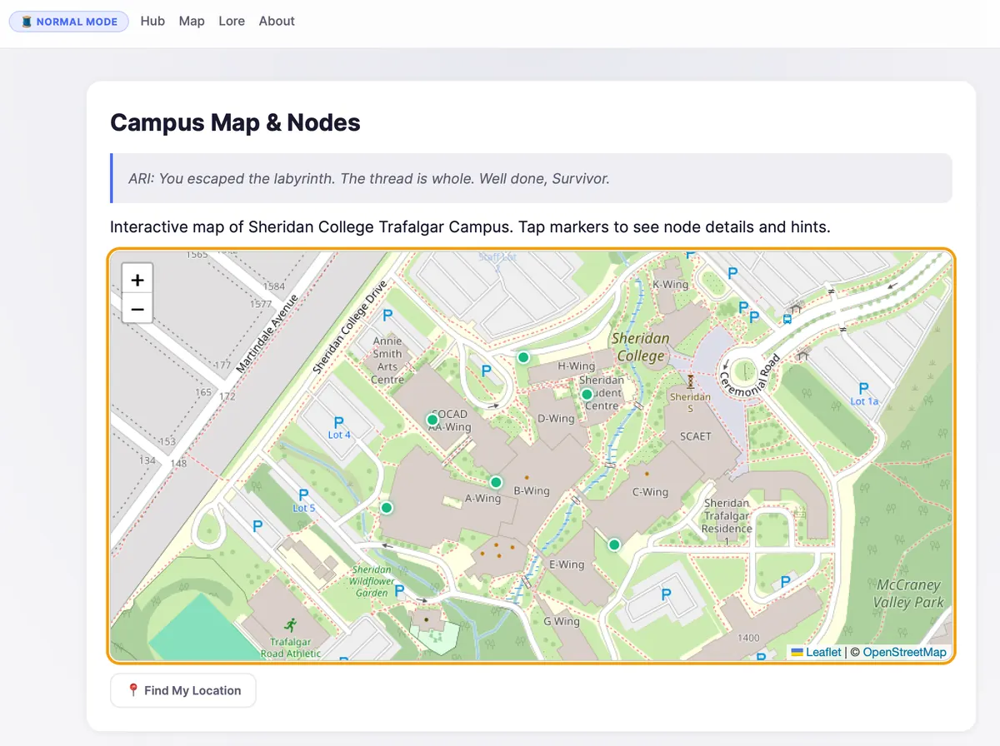
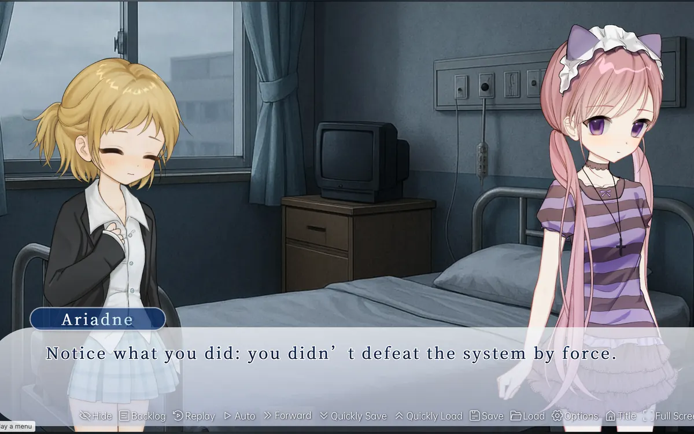
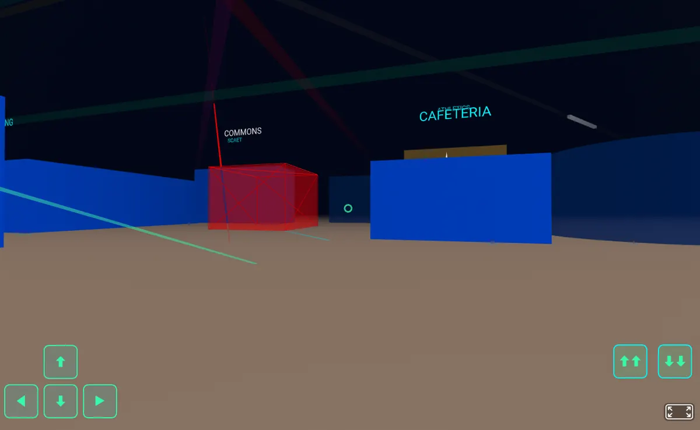
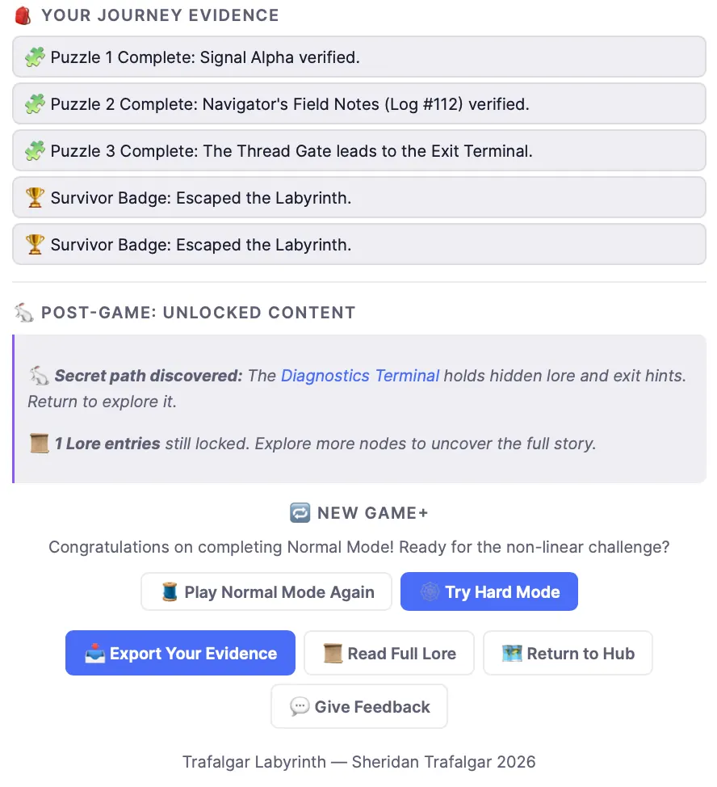
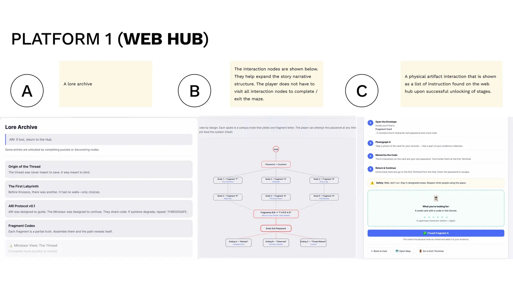
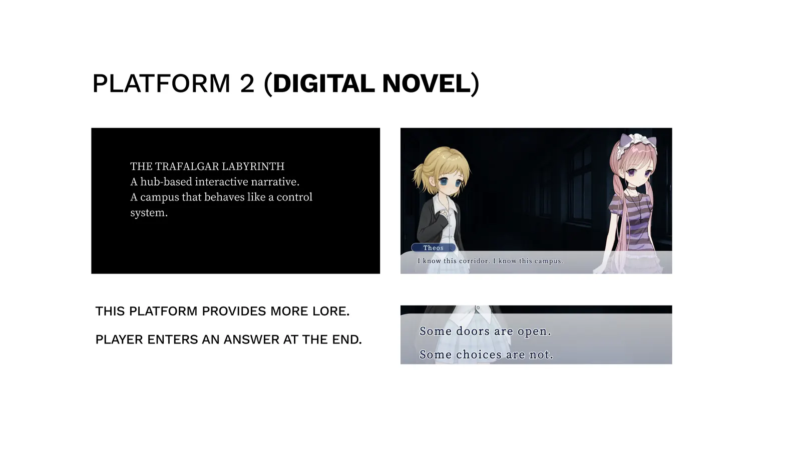
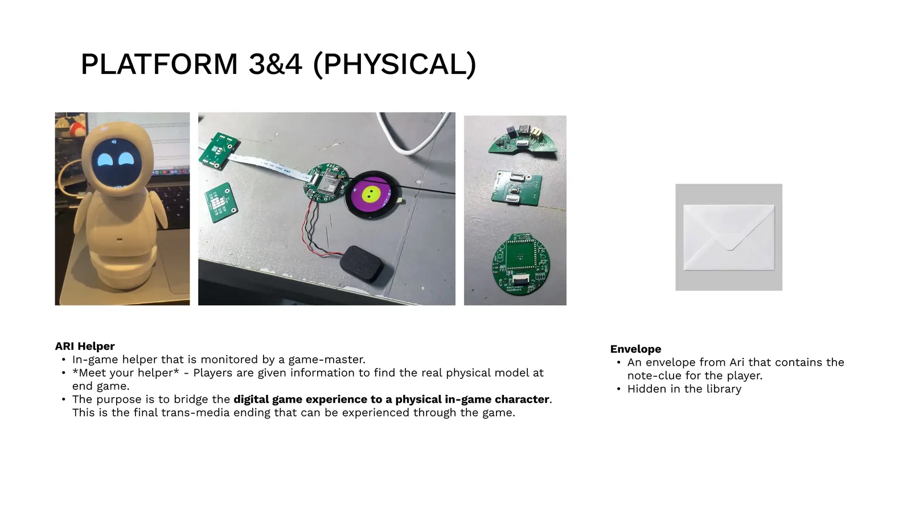
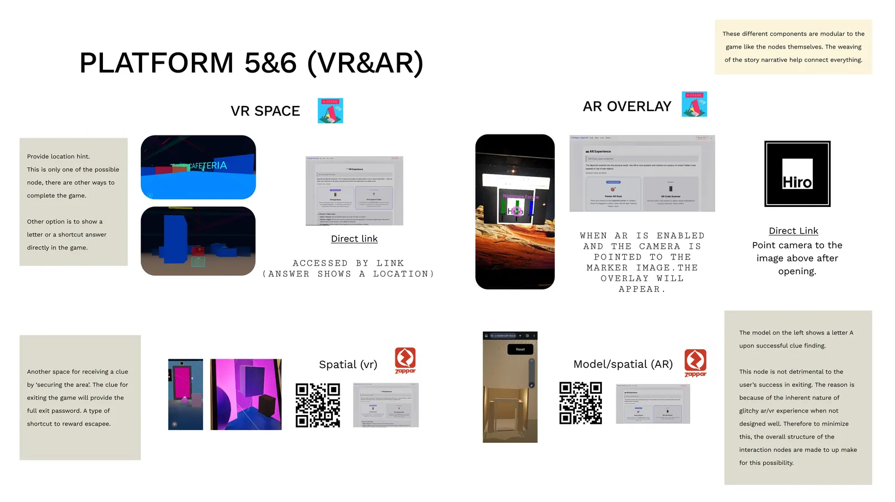
Route & platform architecture路线与平台架构路線與平台架構ルートとプラットフォームの構成Parcours et architecture des plateformesRouten- & Plattformarchitektur
The main flow shows how platforms hand off to each other, from the poster scan through the puzzle nodes to the endgame; the endgame view shows the final branching into three exits.
主流程图展示各平台如何彼此交接：从扫描海报，经过各个谜题节点，到达终局；终局图则展示最后如何分成三个出口。
主流程圖展示各平台如何彼此交接：從掃描海報，經過各個謎題節點，到達終局；終局圖則展示最後如何分成三個出口。
メインフローは、ポスターのスキャンからパズルノードを経てエンドゲームまで、プラットフォーム同士がどう受け渡すかを示し、エンドゲームの図は最後に 3 つの出口へ分かれるところを示します。
Le flux principal montre comment les plateformes se passent le relais, du scan de l’affiche aux nœuds d’énigme puis à la fin de partie ; la vue de fin montre l’embranchement final vers trois sorties.
Der Hauptablauf zeigt, wie die Plattformen einander übergeben – vom Plakatscan über die Rätselknoten bis zum Endspiel; die Endspielansicht zeigt die letzte Verzweigung in drei Ausgänge.
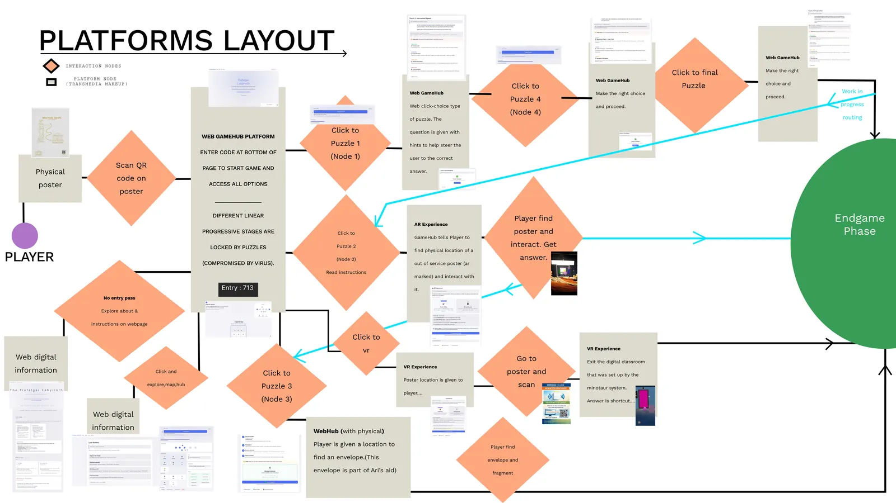
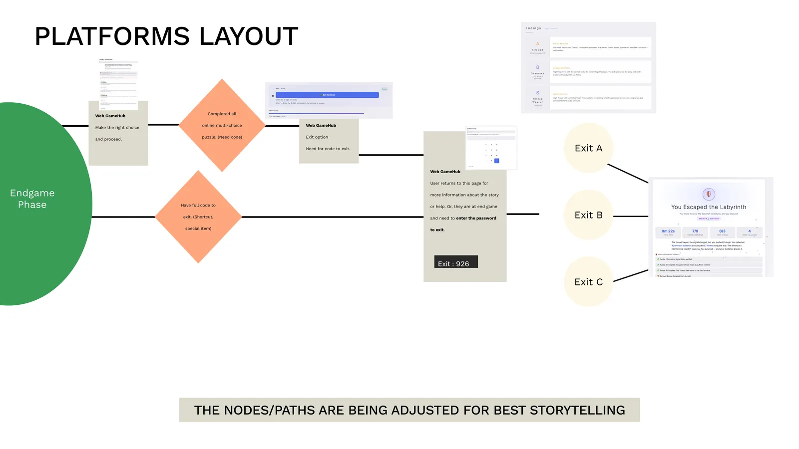
Platform reference平台一览平台一覽プラットフォーム一覧Référence des plateformesPlattformübersicht
- VR — WebXR / A-Frame “Nightmare Room”: hotspot search for fragments and password pieces
- AR — WebAR poster scan: thread hints, warnings and misdirection overlays
- Digital 1 — hub website (map, progress, code entry): the entry and progress backbone, the single source of truth
- Digital 2 — WebGAL chapters: the core narrative text and branching fragments
- Digital 3 — character channel: diegetic clues and red herrings (optional rabbit holes)
- Physical 1 — posters with QR and AR markers: the main gateways and hotspot anchors
- Physical 2 — hidden envelope or “thread token”: a tangible reward carrying a fragment
- VR — WebXR / A-Frame “噩梦房间”：在热点中搜寻碎片和密码片段
- AR — WebAR 海报扫描：线索提示、警告和误导性的叠层
- 数字 1 — 中枢网站（地图、进度、代码输入）：入口与进度的主干，唯一的事实来源
- 数字 2 — WebGAL 章节：核心叙事文本与分支碎片
- 数字 3 — 角色频道：故事内的线索与烟雾弹（可选的兔子洞）
- 实体 1 — 带二维码和 AR 标记的海报：主要入口和热点锚点
- 实体 2 — 隐藏的信封或“线之信物”：带着碎片的实物奖励
- VR — WebXR / A-Frame “噩夢房間”：在熱點中搜尋碎片和密碼片段
- AR — WebAR 海報掃描：線索提示、警告和誤導性的疊層
- 數位 1 — 中樞網站（地圖、進度、程式碼輸入）：入口與進度的主幹，唯一的事實來源
- 數位 2 — WebGAL 章節：核心敘事文字與分支碎片
- 數位 3 — 角色頻道：故事內的線索與煙霧彈（可選的兔子洞）
- 實體 1 — 帶二維碼和 AR 標記的海報：主要入口和熱點錨點
- 實體 2 — 隱藏的信封或“線之信物”：帶著碎片的實物獎勵
- VR — WebXR / A-Frame の「ナイトメアルーム」：ホットスポットで欠片とパスワードの断片を探す
- AR — WebAR のポスタースキャン：糸のヒント、警告、ミスリードのオーバーレイ
- デジタル 1 — ハブサイト（マップ、進行状況、コード入力）：入口と進行の背骨であり、唯一の正しい情報源
- デジタル 2 — WebGAL の章：物語の本文と分岐する欠片
- デジタル 3 — キャラクターのチャンネル：物語内の手がかりとミスリード（任意のラビットホール）
- 実物 1 — QR と AR マーカー付きのポスター：主な入口であり、ホットスポットの起点
- 実物 2 — 隠された封筒、または「糸のトークン」：欠片の入った手に取れるご褒美
- RV — « Nightmare Room » en WebXR / A-Frame : fouille de points chauds pour trouver fragments et morceaux de mot de passe
- RA — scan d’affiche en WebAR : indices du fil, avertissements et fausses pistes en surimpression
- Numérique 1 — site du hub (carte, progression, saisie de code) : l’épine dorsale de l’entrée et de la progression, source unique de vérité
- Numérique 2 — chapitres WebGAL : le texte narratif principal et les fragments à embranchements
- Numérique 3 — canal des personnages : indices diégétiques et fausses pistes (terriers facultatifs)
- Physique 1 — affiches à QR code et marqueurs RA : les principales portes d’entrée et points d’ancrage
- Physique 2 — enveloppe cachée ou « jeton du fil » : une récompense tangible qui porte un fragment
- VR — „Nightmare Room“ in WebXR / A-Frame: Hotspots nach Fragmenten und Passwortteilen absuchen
- AR — WebAR-Plakatscan: Fadenhinweise, Warnungen und irreführende Overlays
- Digital 1 — Hub-Website (Karte, Fortschritt, Code-Eingabe): das Rückgrat von Einstieg und Fortschritt, die einzige verlässliche Quelle
- Digital 2 — WebGAL-Kapitel: der zentrale Erzähltext und verzweigte Fragmente
- Digital 3 — Figurenkanal: diegetische Hinweise und falsche Fährten (optionale Kaninchenbaue)
- Physisch 1 — Plakate mit QR- und AR-Markern: die wichtigsten Tore und Ankerpunkte
- Physisch 2 — versteckter Umschlag oder „Faden-Token“: eine greifbare Belohnung mit einem Fragment
AI in the narrative process叙事过程中的 AI敘事過程中的 AI物語づくりの中の AIL’IA dans le processus narratifKI im Erzählprozess
AI was a collaborator with limits. Models: Claude Opus 4.6 (through Claude Code), ChatGPT-4o and So-VITS-SVC. Five real cases — what we kept, what we rejected and why:
AI 是有边界的协作者。使用的模型：Claude Opus 4.6（通过 Claude Code）、ChatGPT-4o 和 So-VITS-SVC。以下是五个真实案例 —— 保留了什么、否决了什么，以及原因：
AI 是有邊界的協作者。使用的模型：Claude Opus 4.6（透過 Claude Code）、ChatGPT-4o 和 So-VITS-SVC。以下是五個真實案例 —— 保留了什麼、否決了什麼，以及原因：
AI は限界のある協力者でした。使ったモデルは Claude Opus 4.6（Claude Code 経由）、ChatGPT-4o、So-VITS-SVC。実際の 5 つのケースで、何を残し、何を却下し、なぜそうしたかを示します。
L’IA a été une collaboratrice avec des limites. Modèles : Claude Opus 4.6 (via Claude Code), ChatGPT-4o et So-VITS-SVC. Cinq cas réels — ce que nous avons gardé, rejeté, et pourquoi :
KI war eine Mitarbeiterin mit Grenzen. Modelle: Claude Opus 4.6 (über Claude Code), ChatGPT-4o und So-VITS-SVC. Fünf echte Fälle – was wir behalten und verworfen haben und warum:
- Lore — ARI dialogue (Claude). Asked for ten short ambient lines: calm, precise, slightly ominous, institutional. Kept seven, such as “I exist to reduce uncertainty.” Rejected three that sounded too friendly — ARI should feel like a system, not a companion. The kept lines live in config.js.
- Art direction — mood images (ChatGPT-4o). Four variants of a corrupted campus hallway after hours: two were too sci-fi, two caught the institutional-gone-wrong mood. Used as a mood board only; every final asset was made by hand from the palette they suggested.
- Voice — ARI (So-VITS-SVC), cut. The voice was almost human but wrong in a way that undermined ARI as a trustworthy guide, and two weeks of retraining gave diminishing returns. Text-only ARI turned out to reinforce ARI as a system — an accidental improvement.
- Code — decision-tree logic (Claude Code). Validated branching across the two modes, debugged hub state and reviewed the config for edge cases. It caught three state leaks where fragment counters survived a mode switch, and suggested the requiredFragments key that simplified mode switching.
- Video — clue overlays. Glitch overlays and hidden clue markers on phone footage used as WebGAL backgrounds: well-defined, tedious post-processing that would have taken three times as long by hand.
- 世界观 —— ARI 的台词（Claude）。要求写十句简短的环境台词：冷静、精确、略带不祥、带机构腔调。保留七句，比如“I exist to reduce uncertainty.”（我存在是为了减少不确定性）。否决了三句听起来太友善的 —— ARI 应该像一个系统，而不是一个伙伴。保留的台词存放在 config.js 里。
- 美术方向 —— 氛围图（ChatGPT-4o）。生成了四张“下课后被侵蚀的校园走廊”：两张太科幻，两张抓住了“机构出了问题”的氛围。只当作情绪板参考；所有最终素材都按它们启发的配色手工制作。
- 语音 —— ARI（So-VITS-SVC），已砍掉。声音几乎像人，却有种不对劲，削弱了 ARI 作为可信向导的角色；两周的重新训练收效递减。改成纯文字的 ARI 反而强化了它“系统”的身份 —— 一次意外的改进。
- 代码 —— 决策树逻辑（Claude Code）。用来验证两种模式下的分支逻辑、调试中枢状态，并检查配置的边界情况。它发现了三处状态泄漏 —— 切换模式后碎片计数仍然残留，并提出了 requiredFragments 这个配置键，简化了模式切换。
- 视频 —— 线索叠层。在手机拍摄的素材上加故障叠层和隐藏线索标记，用作 WebGAL 的背景：定义清楚、繁琐的后期工作，手工做要多花三倍时间。
- 世界觀 —— ARI 的台詞（Claude）。要求寫十句簡短的環境台詞：冷靜、精確、略帶不祥、帶機構腔調。保留七句，比如“I exist to reduce uncertainty.”（我存在是為了減少不確定性）。否決了三句聽起來太友善的 —— ARI 應該像一個系統，而不是一個夥伴。保留的台詞存放在 config.js 裡。
- 美術方向 —— 氛圍圖（ChatGPT-4o）。生成了四張“下課後被侵蝕的校園走廊”：兩張太科幻，兩張抓住了“機構出了問題”的氛圍。只當作情緒板參考；所有最終素材都按它們啟發的配色手工製作。
- 語音 —— ARI（So-VITS-SVC），已砍掉。聲音幾乎像人，卻有種不對勁，削弱了 ARI 作為可信嚮導的角色；兩週的重新訓練收效遞減。改成純文字的 ARI 反而強化了它“系統”的身份 —— 一次意外的改進。
- 程式碼 —— 決策樹邏輯（Claude Code）。用來驗證兩種模式下的分支邏輯、除錯中樞狀態，並檢查配置的邊界情況。它發現了三處狀態洩漏 —— 切換模式後碎片計數仍然殘留，並提出了 requiredFragments 這個配置鍵，簡化了模式切換。
- 影片 —— 線索疊層。在手機拍攝的素材上加故障疊層和隱藏線索標記，用作 WebGAL 的背景：定義清楚、繁瑣的後期工作，手工做要多花三倍時間。
- 世界観 —— ARI のセリフ（Claude）。落ち着いて、正確で、少し不穏で、事務的な、短い環境セリフを 10 本依頼しました。「I exist to reduce uncertainty.」（不確かさを減らすために私は存在する）など 7 本を採用。親しげすぎる 3 本は却下しました。ARI は仲間ではなくシステムに感じられるべきだからです。採用したセリフは config.js に入っています。
- アートディレクション —— ムード画像（ChatGPT-4o）。放課後の侵食されたキャンパスの廊下を 4 パターン生成。2 枚は SF すぎ、2 枚が「公的な場所が狂っていく」雰囲気をとらえていました。ムードボードとしてのみ使い、最終的な素材はすべて、そこから得た配色で手作りしました。
- 音声 —— ARI（So-VITS-SVC）、削除。声はほとんど人間なのにどこかおかしく、信頼できる案内役としての ARI を損ないました。2 週間の再学習も効果は薄れる一方。テキストだけの ARI にしたら、かえってシステムらしさが強まりました。偶然の改善です。
- コード —— 決定木のロジック（Claude Code）。2 つのモードにまたがる分岐の検証、ハブの状態のデバッグ、設定のエッジケースの確認に使いました。モードを切り替えても欠片のカウンターが残る状態漏れを 3 つ見つけ、モード切り替えを単純にする requiredFragments というキーを提案してくれました。
- 動画 —— 手がかりのオーバーレイ。スマホで撮った映像にグリッチのオーバーレイと隠れた手がかりを加え、WebGAL の背景にしました。手順がはっきりした面倒な後処理で、手作業なら 3 倍の時間がかかったはずです。
- Lore — répliques d’ARI (Claude). Dix courtes répliques d’ambiance demandées : calmes, précises, un peu inquiétantes, institutionnelles. Sept gardées, comme « I exist to reduce uncertainty. » Trois rejetées, trop amicales — ARI doit sembler un système, pas un compagnon. Les répliques retenues vivent dans config.js.
- Direction artistique — images d’ambiance (ChatGPT-4o). Quatre variantes d’un couloir de campus corrompu après les cours : deux trop science-fiction, deux qui saisissaient l’ambiance « institution qui déraille ». Utilisées seulement comme planche d’ambiance ; tous les visuels finaux ont été faits à la main d’après la palette suggérée.
- Voix — ARI (So-VITS-SVC), abandonnée. La voix était presque humaine, mais d’une façon qui sapait ARI comme guide digne de confiance, et deux semaines de réentraînement n’ont donné que des gains décroissants. Un ARI uniquement textuel a finalement renforcé son identité de système — une amélioration accidentelle.
- Code — logique d’arbre de décision (Claude Code). Validation des embranchements entre les deux modes, débogage de l’état du hub et revue de la configuration pour les cas limites. Il a repéré trois fuites d’état où les compteurs de fragments survivaient à un changement de mode, et suggéré la clé requiredFragments qui a simplifié ce changement.
- Vidéo — surimpressions d’indices. Des surimpressions glitch et des indices cachés sur des images filmées au téléphone, utilisées en fond dans WebGAL : un post-traitement fastidieux et bien défini qui aurait pris trois fois plus de temps à la main.
- Lore — ARIs Dialoge (Claude). Erbeten wurden zehn kurze Atmosphäre-Sätze: ruhig, präzise, leicht unheilvoll, institutionell. Sieben wurden behalten, etwa „I exist to reduce uncertainty.“ Drei, die zu freundlich klangen, wurden verworfen – ARI soll sich wie ein System anfühlen, nicht wie eine Begleiterin. Die behaltenen Sätze stehen in config.js.
- Art Direction — Stimmungsbilder (ChatGPT-4o). Vier Varianten eines korrumpierten Campusflurs nach Feierabend: zwei waren zu sehr Science-Fiction, zwei trafen die Stimmung „Institution außer Kontrolle“. Nur als Moodboard genutzt; jedes finale Asset entstand von Hand nach der Palette, die sie nahelegten.
- Stimme — ARI (So-VITS-SVC), gestrichen. Die Stimme war fast menschlich, aber auf eine Weise falsch, die ARI als vertrauenswürdige Führerin untergrub, und zwei Wochen Nachtraining brachten immer weniger. Eine rein textbasierte ARI stärkte am Ende ihre Rolle als System – eine zufällige Verbesserung.
- Code — Entscheidungsbaum-Logik (Claude Code). Verzweigungen über beide Modi geprüft, den Hub-Zustand debuggt und die Konfiguration auf Grenzfälle durchgesehen. Gefunden wurden drei Zustandslecks, bei denen Fragmentzähler einen Moduswechsel überlebten, und vorgeschlagen wurde der Schlüssel requiredFragments, der den Moduswechsel vereinfachte.
- Video — Hinweis-Overlays. Glitch-Overlays und versteckte Hinweismarken auf Handyaufnahmen, die als WebGAL-Hintergründe dienten: klar definierte, mühsame Nachbearbeitung, die von Hand dreimal so lange gedauert hätte.
“AI was seldom used because of its uncertain behaviour. The energy spent on a well-crafted prompt often exceeded the cost of building by hand — we learned to tell AI-able tasks from the ones that needed our own hands.”
“我们很少用 AI，因为它的表现不确定。为了写好一个提示词花的精力，常常比手工做还多 —— 我们学会了分辨哪些任务适合交给 AI，哪些必须亲手来做。”
“我們很少用 AI，因為它的表現不確定。為了寫好一個提示詞花的精力，常常比手工做還多 —— 我們學會了分辨哪些任務適合交給 AI，哪些必須親手來做。”
「AI の振る舞いは不確かなので、ほとんど使いませんでした。よく練ったプロンプトにかける労力は、手で作るより大きくなることが多かった。AI に任せられる仕事と、自分たちの手が必要な仕事を見分けることを学びました。」
« Nous avons peu utilisé l’IA à cause de son comportement incertain. L’énergie dépensée à bien rédiger une consigne dépassait souvent le coût de tout faire à la main — nous avons appris à distinguer les tâches confiables à l’IA de celles qui demandaient nos propres mains. »
„Wir haben KI selten eingesetzt, weil ihr Verhalten unberechenbar ist. Die Energie für einen gut formulierten Prompt überstieg oft den Aufwand, es von Hand zu bauen – wir haben gelernt, Aufgaben für die KI von solchen zu unterscheiden, die unsere eigenen Hände brauchten.“
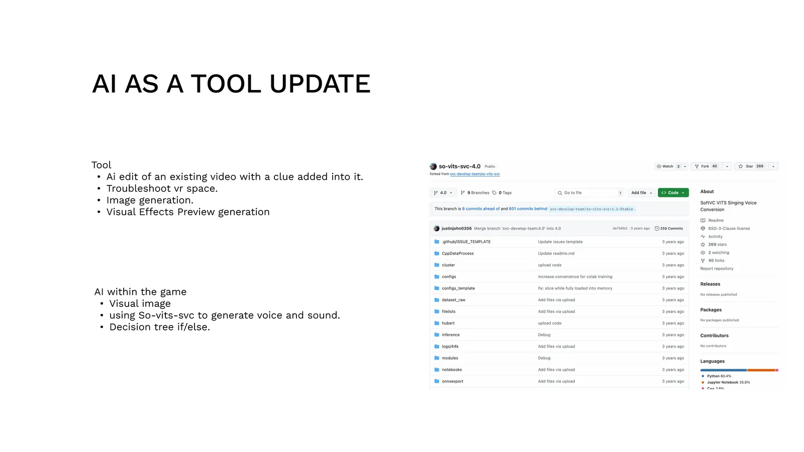
Team & project management团队与项目管理團隊與專案管理チームとプロジェクト管理Équipe et gestion de projetTeam & Projektmanagement
- Yiyang — lead · web hub · WebGAL · visuals · UI/UX: hub development, WebGAL integration, UI/UX and art direction, dialogue and narrative copy, decision-tree logic and project coordination — connecting every platform into one journey and keeping the visual identity consistent.
- Andrew — AR/VR · physical · UX: VR space construction, 3D environments and physical artifact fabrication; owned the immersive shortcut path.
- Henry — lore · research · docs: early lore research and story concepts; presentation and documentation design, including the slides, process documentation and cognitive walkthrough report.
- AI — collaborator: sped up prototyping and structure while humans reviewed most of the code. Some WebGAL graphics and poster assets were AI-assisted and checked by the team; it was weakest where creative judgment was needed.
- Yiyang — 组长 · 网页中枢 · WebGAL · 视觉 · UI/UX：中枢开发、WebGAL 整合、UI/UX 与美术方向、对白与叙事文案、决策树逻辑和项目统筹 —— 把每个平台串成一段旅程，并保持视觉识别的一致。
- Andrew — AR/VR · 实体 · UX：搭建 VR 空间、3D 环境，制作实体道具；负责沉浸式的捷径路线。
- Henry — 世界观 · 研究 · 文档：早期的世界观研究和故事概念；演示与文档设计，包括幻灯片、过程文档和认知走查报告。
- AI — 协作者：加快原型和结构搭建，大部分代码由人审查。部分 WebGAL 图像和海报素材有 AI 辅助，并经团队核对；在需要创意判断的地方它最弱。
- Yiyang — 組長 · 網頁中樞 · WebGAL · 視覺 · UI/UX：中樞開發、WebGAL 整合、UI/UX 與美術方向、對白與敘事文案、決策樹邏輯和專案統籌 —— 把每個平台串成一段旅程，並保持視覺識別的一致。
- Andrew — AR/VR · 實體 · UX：搭建 VR 空間、3D 環境，製作實體道具；負責沉浸式的捷徑路線。
- Henry — 世界觀 · 研究 · 文件：早期的世界觀研究和故事概念；演示與文件設計，包括幻燈片、過程文件和認知走查報告。
- AI — 協作者：加快原型和結構搭建，大部分程式碼由人審查。部分 WebGAL 影象和海報素材有 AI 輔助，並經團隊核對；在需要創意判斷的地方它最弱。
- Yiyang — リーダー · ウェブハブ · WebGAL · ビジュアル · UI/UX：ハブの開発、WebGAL の統合、UI/UX とアートディレクション、セリフと物語の文章、決定木のロジック、プロジェクトの調整。すべてのプラットフォームを 1 つの旅につなぎ、ビジュアルアイデンティティを一貫させました。
- Andrew — AR/VR · 実物 · UX：VR 空間の構築、3D 環境、実物の小道具の制作。没入型の近道ルートを担当。
- Henry — 世界観 · リサーチ · ドキュメント：初期の世界観リサーチと物語のコンセプト。スライド、プロセス資料、コグニティブ・ウォークスルーのレポートなど、発表と資料のデザイン。
- AI — 協力者：試作と構造づくりを速め、コードの大半は人が確認しました。WebGAL の画像やポスター素材の一部は AI の補助を受け、チームが確認しています。創造的な判断が必要な場面がいちばん苦手でした。
- Yiyang — chef d’équipe · hub web · WebGAL · visuels · UI/UX : développement du hub, intégration WebGAL, UI/UX et direction artistique, dialogues et textes narratifs, logique d’arbre de décision et coordination — relier chaque plateforme en un seul parcours et garder l’identité visuelle cohérente.
- Andrew — RA/RV · physique · UX : construction de l’espace RV, environnements 3D et fabrication des objets physiques ; responsable du raccourci immersif.
- Henry — lore · recherche · documentation : recherche narrative initiale et concepts d’histoire ; conception des présentations et de la documentation, dont les diapositives, le dossier de processus et le rapport de parcours cognitif.
- IA — collaboratrice : elle a accéléré le prototypage et la structuration, tandis que l’essentiel du code était relu par des humains. Certains visuels WebGAL et éléments d’affiche ont été assistés par l’IA et vérifiés par l’équipe ; elle était la plus faible là où il fallait du jugement créatif.
- Yiyang — Leitung · Web-Hub · WebGAL · Visuals · UI/UX: Hub-Entwicklung, WebGAL-Integration, UI/UX und Art Direction, Dialoge und Erzähltexte, Entscheidungsbaum-Logik und Projektkoordination – jede Plattform zu einer Reise verbinden und die visuelle Identität einheitlich halten.
- Andrew — AR/VR · physisch · UX: Bau des VR-Raums, 3D-Umgebungen und Fertigung der physischen Objekte; verantwortlich für den immersiven Abkürzungsweg.
- Henry — Lore · Recherche · Dokumentation: frühe Lore-Recherche und Story-Konzepte; Gestaltung von Präsentationen und Dokumentation, darunter die Folien, die Prozessdokumentation und der Bericht zum Cognitive Walkthrough.
- KI — Mitarbeiterin: beschleunigte Prototyping und Strukturierung, während Menschen den Großteil des Codes prüften. Einige WebGAL-Grafiken und Plakatelemente entstanden mit KI-Unterstützung und wurden vom Team geprüft; am schwächsten war sie, wo kreatives Urteil gefragt war.
AI’s role in the groupAI 在团队中的角色AI 在團隊中的角色チームの中での AI の役割Le rôle de l’IA dans le groupeDie Rolle der KI im Team
- Code-review standups — AI scaffolded logic faster; humans reviewed and verified everything before use.
- Asset pipeline — AI draft → human edit → team review → approve or reject. About 40% of AI drafts were rejected for tone or quality.
- Decision input — when stuck we asked AI for options and trade-offs (“should the timer punish or just pressure?”); the decision was always human.
- 代码审查站会 —— AI 更快地搭出逻辑框架；所有内容在使用前都由人审查和验证。
- 素材流程 —— AI 初稿 → 人工修改 → 团队评审 → 通过或否决。约 40% 的 AI 初稿因语气或质量被否决。
- 决策参考 —— 卡住时，我们会让 AI 列出选项和取舍（“计时器应该惩罚玩家，还是只施加压力？”）；最后拍板的永远是人。
- 程式碼審查站會 —— AI 更快地搭出邏輯框架；所有內容在使用前都由人審查和驗證。
- 素材流程 —— AI 初稿 → 人工修改 → 團隊評審 → 透過或否決。約 40% 的 AI 初稿因語氣或質量被否決。
- 決策參考 —— 卡住時，我們會讓 AI 列出選項和取捨（“計時器應該懲罰玩家，還是隻施加壓力？”）；最後拍板的永遠是人。
- コードレビューの朝会 —— AI がロジックの骨組みを速く作り、使う前にすべて人が確認・検証しました。
- 素材のパイプライン —— AI の下書き → 人の編集 → チームのレビュー → 採用か却下。AI の下書きの約 4 割は、トーンや質の理由で却下しました。
- 判断の材料 —— 行き詰まったときは AI に選択肢と得失を出してもらいました（「タイマーは罰にするか、プレッシャーだけにするか」）。決めるのは常に人です。
- Points de revue de code — l’IA posait plus vite l’échafaudage logique ; tout était relu et vérifié par un humain avant usage.
- Chaîne des ressources — brouillon IA → retouche humaine → revue d’équipe → validation ou rejet. Environ 40 % des brouillons IA ont été rejetés pour le ton ou la qualité.
- Aide à la décision — quand nous bloquions, nous demandions à l’IA options et compromis (« le chrono doit-il punir ou seulement mettre la pression ? ») ; la décision restait toujours humaine.
- Code-Review-Standups — die KI baute Logikgerüste schneller; Menschen prüften und verifizierten alles vor dem Einsatz.
- Asset-Pipeline — KI-Entwurf → menschliche Überarbeitung → Team-Review → annehmen oder verwerfen. Rund 40 % der KI-Entwürfe wurden wegen Ton oder Qualität verworfen.
- Entscheidungshilfe — wenn wir feststeckten, fragten wir die KI nach Optionen und Abwägungen („Soll der Timer bestrafen oder nur Druck machen?“); entschieden haben immer Menschen.
Teams handled file sharing, link archives and test records; WeChat handled quick decisions and translation; testing was always in person. Each member owned a platform end to end while I coordinated the hub that stitched them together.
Teams 用于文件共享、链接归档和测试记录；微信用于快速决策和翻译；测试一律线下进行。每位成员从头到尾负责一个平台，我负责统筹把它们缝合在一起的中枢。
Teams 用於檔案共享、連結歸檔和測試記錄；微信用於快速決策和翻譯；測試一律線下進行。每位成員從頭到尾負責一個平台，我負責統籌把它們縫合在一起的中樞。
ファイル共有、リンクのアーカイブ、テスト記録は Teams、素早い決定と翻訳は WeChat、テストは常に対面で行いました。各メンバーが 1 つのプラットフォームを最初から最後まで担当し、私はそれらをつなぎ合わせるハブを取りまとめました。
Teams servait au partage de fichiers, aux archives de liens et aux comptes rendus de tests ; WeChat aux décisions rapides et à la traduction ; les tests se faisaient toujours en personne. Chaque membre portait une plateforme de bout en bout, et je coordonnais le hub qui les reliait.
Teams diente zum Teilen von Dateien, zur Linksammlung und für Testprotokolle; WeChat für schnelle Entscheidungen und Übersetzungen; getestet wurde immer persönlich. Jedes Mitglied verantwortete eine Plattform von Anfang bis Ende, während ich den Hub koordinierte, der alles zusammenhielt.
14-week Gantt chart (Google Sheets) ↗
14 週間のガントチャート（Google スプレッドシート）↗
Diagramme de Gantt sur 14 semaines (Google Sheets) ↗
Gantt-Diagramm über 14 Wochen (Google Sheets) ↗
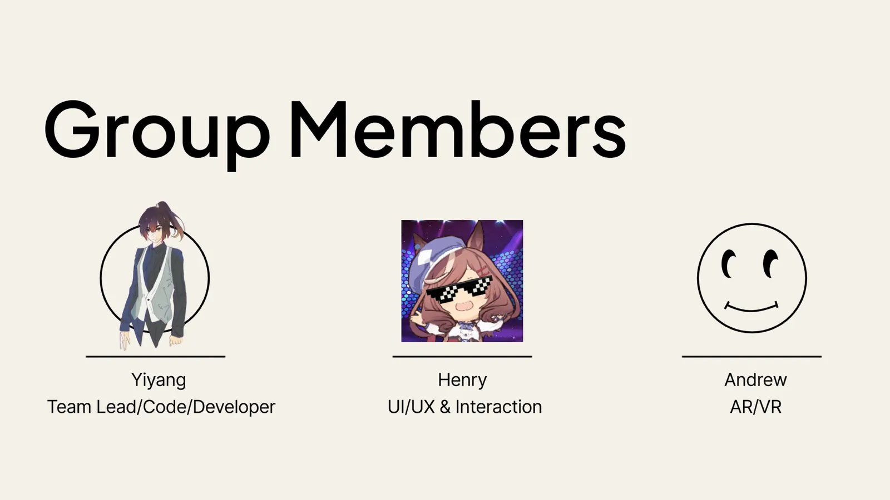
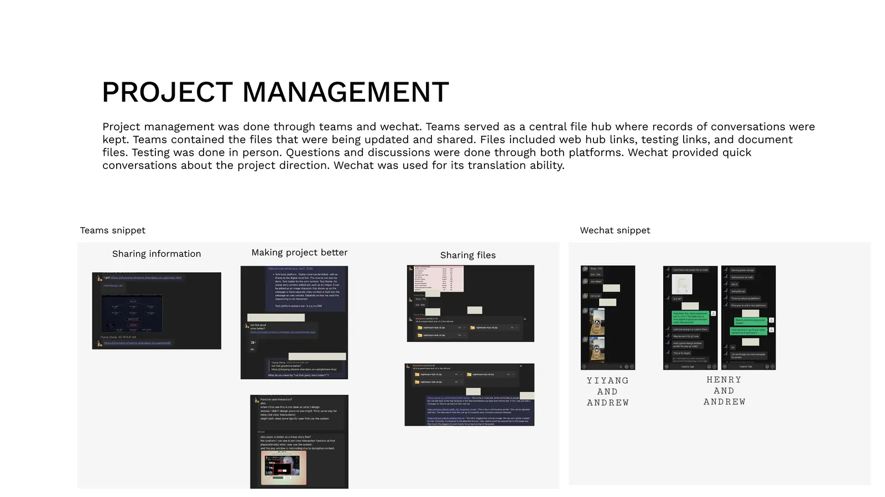
What I learned收获收穫学んだことCe que j’en retiensWas ich gelernt habe
- Test in person, early. Seeing someone freeze at the entry screen beat fifty “it was fine” survey answers.
- Design for failure. With AR and VR required, the job was anticipating device and user errors so no node could strand a player.
- Use AI where it pays. It sped up 3D concept models and asset ideas; video editing and some debugging were faster by hand.
- 尽早做面对面测试。亲眼看到有人在入口页愣住，胜过五十份写着“还行”的问卷。
- 为失败而设计。既然 AR 和 VR 是必选项，关键就在于预判设备和用户的各种出错，确保没有任何一个节点会把玩家困住。
- 把 AI 用在值得的地方。它加快了 3D 概念模型和素材构思；而剪视频和部分调试，手动反而更快。
- 儘早做面對面測試。親眼看到有人在入口頁愣住，勝過五十份寫著“還行”的問卷。
- 為失敗而設計。既然 AR 和 VR 是必選項，關鍵就在於預判裝置和使用者的各種出錯，確保沒有任何一個節點會把玩家困住。
- 把 AI 用在值得的地方。它加快了 3D 概念模型和素材構思；而剪影片和部分除錯，手動反而更快。
- 早めに、対面でテストする。入口画面で固まる人を一度見るほうが、「問題なかった」というアンケート 50 件よりも役に立ちます。
- 失敗を前提に設計する。AR と VR が必須である以上、端末やユーザーのミスを先回りして、どのノードでもプレイヤーが行き詰まらないようにすることが仕事でした。
- AI は効果のあるところで使う。3D のコンセプトモデルや素材のアイデア出しは速くなりましたが、動画編集や一部のデバッグは手作業のほうが速かったです。
- Tester tôt, en personne. Voir quelqu’un se figer sur l’écran d’entrée vaut mieux que cinquante réponses « c’était bien ».
- Concevoir pour l’échec. La RA et la RV étant obligatoires, il fallait anticiper les erreurs d’appareil et d’utilisateur pour qu’aucun nœud ne bloque un joueur.
- Utiliser l’IA là où elle rapporte. Elle a accéléré les modèles 3D de concept et les idées d’assets ; le montage vidéo et une partie du débogage allaient plus vite à la main.
- Früh und persönlich testen. Jemanden am Einstiegsbildschirm erstarren zu sehen, war mehr wert als fünfzig Umfrageantworten mit „war okay“.
- Auf Fehler hin gestalten. Da AR und VR Pflicht waren, ging es darum, Geräte- und Bedienfehler vorherzusehen, damit kein Knoten jemanden stranden lässt.
- KI dort einsetzen, wo sie sich lohnt. Sie beschleunigte 3D-Konzeptmodelle und Ideen für Assets; Videoschnitt und manches Debugging gingen von Hand schneller.
Links & supporting files链接与补充文件連結與補充檔案リンクと補足資料Liens et documentsLinks & ergänzende Dateien
- Main hub (playable here)主中枢（可在此试玩）主中樞（可在此試玩）メインハブ（ここで遊べます）Hub principal (jouable ici)Haupt-Hub (hier spielbar) ↗
- Visual novel (live)视觉小说（在线）視覺小說（線上）ビジュアルノベル（公開中）Visual novel (en ligne)Visual Novel (live) ↗
- About the visual novel — lore, characters, routes, endings关于视觉小说 — 世界观、角色、路线、结局關於視覺小說 — 世界觀、角色、路線、結局ビジュアルノベルについて — 世界観、キャラクター、ルート、エンディングÀ propos du visual novel — lore, personnages, routes, finsÜber die Visual Novel — Lore, Figuren, Routen, Enden ↗
- Earlier hub v4 (process reference)早期中枢 v4（过程参考）早期中樞 v4（過程參考）以前のハブ v4（プロセスの参考）Ancien hub v4 (référence de processus)Früherer Hub v4 (Prozessreferenz) ↗
- Earlier hub v5 (process reference)早期中枢 v5（过程参考）早期中樞 v5（過程參考）以前のハブ v5（プロセスの参考）Ancien hub v5 (référence de processus)Früherer Hub v5 (Prozessreferenz) ↗
- Figma planning boardFigma 规划白板Figma 規劃白板Figma の計画ボードTableau de planification FigmaPlanungsboard in Figma ↗
- VR prototype with location hint带位置提示的 VR 原型帶位置提示的 VR 原型場所のヒント付き VR プロトタイプPrototype RV avec indice de lieuVR-Prototyp mit Ortshinweis ↗
- AR prototype (live)AR 原型（在线）AR 原型（線上）AR プロトタイプ（公開中）Prototype RA (en ligne)AR-Prototyp (live) ↗
- Presentation deck演示文稿簡報プレゼンテーション資料PrésentationPräsentation ↗
Credits致谢致謝クレジットCréditsCredits
Team Nightmare Escape — Yiyang Zhang (team lead, code), Andrew (AR/VR, physical artifacts, UX), Henry (lore research, documentation). VDES 34444 Interactive Narrative, Sheridan College, Winter 2026.
Nightmare Escape 小组——Yiyang Zhang（组长、开发）、Andrew（AR/VR、实体道具、UX）、Henry（世界观研究、文档）。谢尔丹学院 VDES 34444 互动叙事课程，2026 年冬季学期。
Nightmare Escape 小組——Yiyang Zhang（組長、開發）、Andrew（AR/VR、實體道具、UX）、Henry（世界觀研究、文件）。謝爾丹學院 VDES 34444 互動敘事課程，2026 年冬季學期。
チーム Nightmare Escape——Yiyang Zhang（チームリーダー、開発）、Andrew（AR/VR、実物の小道具、UX）、Henry（世界観のリサーチ、ドキュメント）。シェリダン・カレッジ VDES 34444 インタラクティブ・ナラティブ、2026 年冬学期。
Équipe Nightmare Escape — Yiyang Zhang (chef d’équipe, code), Andrew (RA/RV, objets physiques, UX), Henry (recherche narrative, documentation). VDES 34444 Narration interactive, Sheridan College, hiver 2026.
Team Nightmare Escape — Yiyang Zhang (Teamleitung, Code), Andrew (AR/VR, physische Objekte, UX), Henry (Lore-Recherche, Dokumentation). VDES 34444 Interactive Narrative, Sheridan College, Winter 2026.
Related: 梦魇逃亡 Nightmare Escape, the visual novel I’m developing for Steam.
相关：梦魇逃亡，我正在为 Steam 开发的视觉小说。
相關：梦魇逃亡，我正在為 Steam 開發的視覺小說。
関連：梦魇逃亡 Nightmare Escape——Steam 向けに開発中のビジュアルノベル。
Voir aussi : 梦魇逃亡 Nightmare Escape, le visual novel que je développe pour Steam.
Verwandtes Projekt: 梦魇逃亡 Nightmare Escape, die Visual Novel, die ich für Steam entwickle.